<!doctype html>
<html lang="en">
<head>
  <meta charset="utf-8">
  <meta name="viewport" content="width=device-width, initial-scale=1">
  <title>arxiv digest — 2026-09-11</title>
  <style>
:root {
  --bg: #ffffff;
  --fg: #1f2328;
  --muted: #59636e;
  --border: #d0d7de;
  --card: #f6f8fa;
  --link: #0969da;
}
body {
  max-width: 980px;
  margin: 0 auto;
  padding: 2rem 1rem 5rem;
  font-family: -apple-system, BlinkMacSystemFont, "Segoe UI", Helvetica, Arial, sans-serif;
  line-height: 1.55;
  color: var(--fg);
  background: var(--bg);
}
a { color: var(--link); }
img { max-width: 100%; height: auto; }
pre, code { background: var(--card); border-radius: 6px; }
pre { padding: 1rem; overflow-x: auto; }
blockquote { border-left: 4px solid var(--border); padding-left: 1rem; color: var(--muted); }
details { margin: 0.6rem 0; }
summary { cursor: pointer; font-weight: 600; }
.paper-figures-scroll {
  display: flex;
  gap: 1rem;
  overflow-x: auto;
  overscroll-behavior-x: contain;
  padding: 0.75rem 0.25rem 1rem;
  margin: 1rem 0 1.25rem;
  border-top: 1px solid var(--border);
  border-bottom: 1px solid var(--border);
  scroll-snap-type: x proximity;
}
.paper-figure-card {
  flex: 0 0 min(260px, 72vw);
  scroll-snap-align: start;
  background: var(--card);
  border: 1px solid var(--border);
  border-radius: 12px;
  padding: 0.55rem;
}
.paper-figure-card img {
  display: block;
  width: 100%;
  max-height: 240px;
  object-fit: contain;
  background: white;
  border-radius: 8px;
}
.paper-figure-caption {
  display: block;
  margin-top: 0.5rem;
  color: var(--muted);
  font-size: 0.85rem;
}
.figure-strip-hint {
  color: var(--muted);
  font-size: 0.9rem;
  margin-bottom: -0.3rem;
}
</style>
  <!-- MathJax: renders $...$ inline math and $$...$$ display math, plus
       \(...\) and \[...\]. Loaded from the official CDN; works offline
       once cached. Configured to skip code/pre blocks so arxiv IDs that
       look like dollar amounts don't get mangled. -->
  <script>
    window.MathJax = {
      tex: {
        inlineMath: [['$', '$'], ['\\(', '\\)']],
        displayMath: [['$$', '$$'], ['\\[', '\\]']],
        processEscapes: true,
        processEnvironments: true
      },
      options: {
        skipHtmlTags: ['script', 'noscript', 'style', 'textarea', 'pre', 'code'],
        ignoreHtmlClass: 'tex2jax_ignore',
        processHtmlClass: 'tex2jax_process'
      }
    };
  </script>
  <script id="MathJax-script" async
    src="https://cdn.jsdelivr.net/npm/mathjax@3/es5/tex-chtml.js"></script>
</head>
<body>
<header style="background-color: #333; color: white; padding: 15px; margin-bottom: 20px;">
  <h1 style="margin: 0; font-size: 24px;">
    <a href="https://ochelpan.github.io/arXiv_clean/" style="color: white; text-decoration: none;">Main</a>
  </h1>
</header>

<h1>Daily arXiv Report</h1>

<hr>
<p>
<a href="index.html">← Index</a>
 · <a href="papers_06.html">← Previous</a> · <a href="papers_08.html">Next →</a>
</p>
<hr>

<h2>Papers 121–140</h2>
<p><a id="paper-2609.09467"></a></p>
<h3 id="noise-limits-on-fault-tolerant-fermionic-quantum-computing"><a href="http://arxiv.org/abs/2609.09467v1">Noise Limits on Fault-Tolerant Fermionic Quantum Computing</a></h3>
<p><strong>Authors:</strong> Owen Allison, Luke Coffman<br>
<strong>Type:</strong> theory · <strong>Category:</strong> quantum information and computing · <strong>PDF:</strong> <a href="https://arxiv.org/pdf/2609.09467v1">https://arxiv.org/pdf/2609.09467v1</a><br>
<strong>Analysis basis:</strong> full PDF text, analyzed in chunks</p>
<div class="figure-strip-hint">↔ Scroll figures horizontally</div>
<div class="paper-figures-scroll">
<figure class="paper-figure-card">
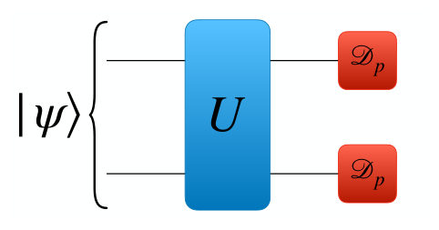
<figcaption class="paper-figure-caption"><b>Fig 1.</b> FIG. 1. The noise model under consideration: First we apply the two qubit resourceful gate U, then apply local depolarizing noise D⊗2 p .</figcaption>
</figure>
<figure class="paper-figure-card">
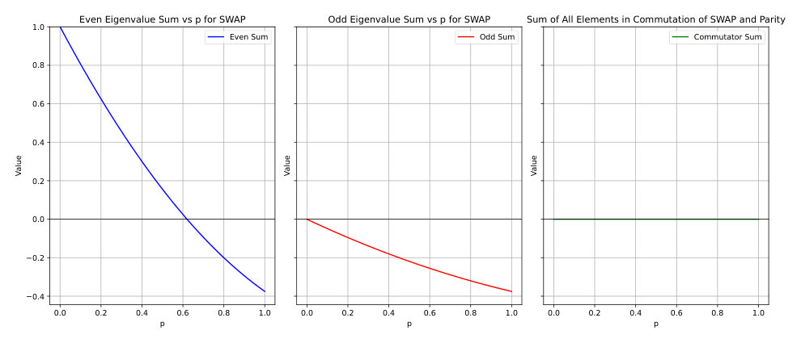
<figcaption class="paper-figure-caption"><b>Fig 2.</b> FIG. 2. Numerical results implementing Algorithm 1 for SWAP. The left two graphs show the value for ∆± for different probabilities of depolarization p. The third graph shows that [ρU,p, P] = 0 regardless of noise.</figcaption>
</figure>
</div>
<p><strong>Summary.</strong> This paper calculates the noise threshold for fault-tolerant fermionic quantum computation using a specific non-Gaussian gate set. By analyzing the channel's structure via Uhlmann-Wootters concurrences, the authors establish a new, high upper bound of approximately 62% for the tolerable noise level. This result is crucial for designing robust quantum hardware based on fermionic physics.</p>
<p><strong>Why it may be interesting.</strong> The rigorous application of entanglement measures (concurrences) to diagnose the breakdown of non-Gaussianity in fermionic systems provides a powerful theoretical tool for assessing hardware viability in quantum computation.</p>
<details>
<summary>Detailed structure</summary>
<p><strong>Main problem.</strong> The paper aims to determine the maximum noise level a quantum circuit can tolerate while remaining fault-tolerant for fermionic quantum computation.</p>
<p><strong>Main result.</strong> The upper bound limit for fermionic quantum computing using the matchgate set is found to be approximately 62%, which is independent of circuit depth.</p>
<p><strong>Method.</strong> The authors use Uhlmann-Wootters concurrences applied to the fermionic Choi state to test when the combined channel becomes 'convex Gaussian,' signaling a loss of non-Gaussian support.</p>
<p><strong>Model / system.</strong> The system is fermionic quantum computing, which utilizes the matchgate with a non-Gaussian resource universal gate set. The analysis incorporates parity superselection and models noise using local depolarizing noise.</p>
<p><strong>Key observables.</strong> Uhlmann-Wootters concurrences ($C_+(U, p)$ and $C_-(U, p)$) are used to diagnose the convex Gaussian nature of the noisy channel.</p>
<p><strong>Important parameters / regimes.</strong> The noise probability $p$ is the key parameter, with the derived limit being $p = (8 - 2\sqrt{6})/5 \approx 62\%$.</p>
<p><strong>Assumptions / limitations.</strong> The bound is not directly comparable to previous work due to differences in the noise model applied to the gate set.</p>
<p><strong>Figures summary.</strong> Figures illustrate the noise model (gate followed by local depolarizing noise) and show numerical results plotting diagnostic quantities ($\Delta_{\pm}$ and commutator sums) against the noise parameter $p$.</p>
<p><strong>Paper structure.</strong> The paper establishes the problem of noise thresholds, details the mathematical framework using fermionic Choi states and parity projections, derives the necessary concurrence formulas, and finally solves for the critical noise parameter $p$.</p>
</details>
<details>
<summary>Abstract</summary>
<p>Determining the highest amount of noise that quantum circuits can handle is an interesting and crucial task in the development of fault-tolerant quantum computation. Previous work has constrained this upper limit for local depolarizing noise to $\approx 45~\%$ for circuits constructed using the universal Clifford with T gate set by finding the noise threshold where the gate set loses universality. In this work, we use a similar method with the matchgate with non-Gaussian resource universal gate set to find a limit of $p=(8 - 2 \sqrt{6})/5$ or $\approx 62~\%$ for fermionic quantum computing that is independent of circuit depth. To do this, we use Uhlmann-Wootters concurrences for a 4-mode fermionic Choi state representing a resourceful gate combined with local depolarizing noise to determine when the combined channel is convex Gaussian. These bounds are not directly comparable due to differences in noise model making the bound of $\approx 62~\%$ the best known for fermions.</p>
</details>
<p><sub><a href="#top">↑ back to top</a></sub></p>

<p><a id="paper-2609.09373"></a></p>
<h3 id="non-multiplicativity-of-the-holevo-barycenter-of-quantum-channels"><a href="http://arxiv.org/abs/2609.09373v1">Non-Multiplicativity of the Holevo Barycenter of Quantum Channels</a></h3>
<p><strong>Authors:</strong> Sayantan Chakraborty, Stefano Mancini, Leonardo Rossetti, Andreas Winter<br>
<strong>Type:</strong> theory · <strong>Category:</strong> quantum information and computing · <strong>PDF:</strong> <a href="https://arxiv.org/pdf/2609.09373v1">https://arxiv.org/pdf/2609.09373v1</a><br>
<strong>Analysis basis:</strong> full PDF text, analyzed in chunks</p>
<div class="figure-strip-hint">↔ Scroll figures horizontally</div>
<div class="paper-figures-scroll">
<figure class="paper-figure-card">

<figcaption class="paper-figure-caption"><b>Fig 1.</b> Low-resolution page preview, page 2</figcaption>
</figure>
<figure class="paper-figure-card">
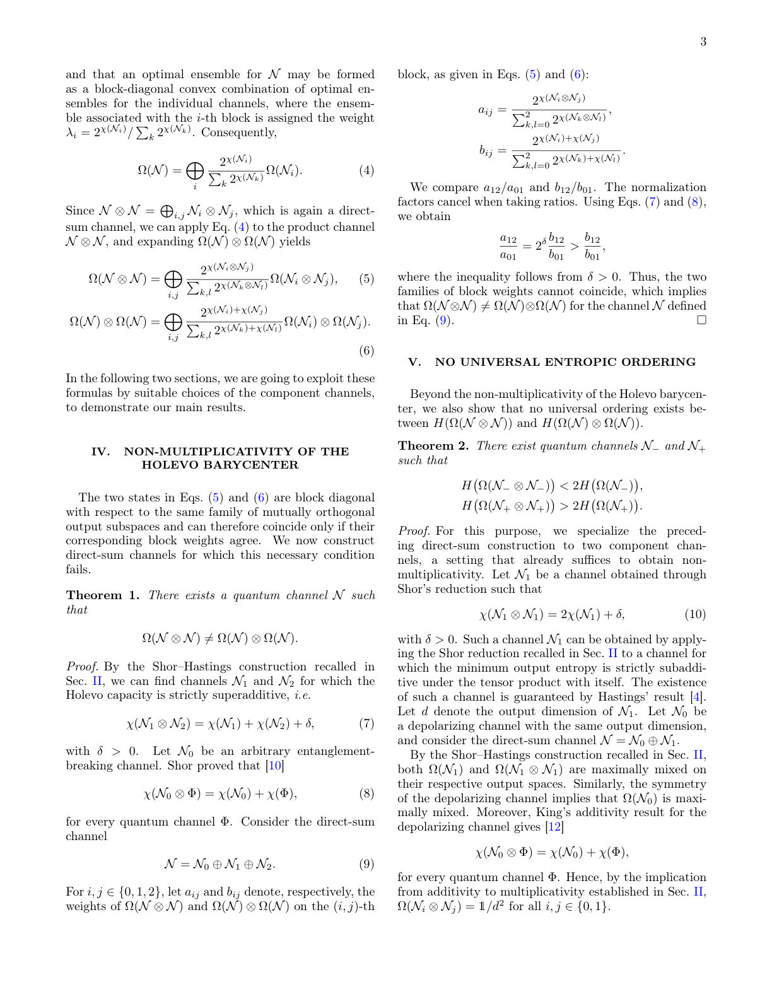
<figcaption class="paper-figure-caption"><b>Fig 2.</b> Low-resolution page preview, page 3</figcaption>
</figure>
<figure class="paper-figure-card">
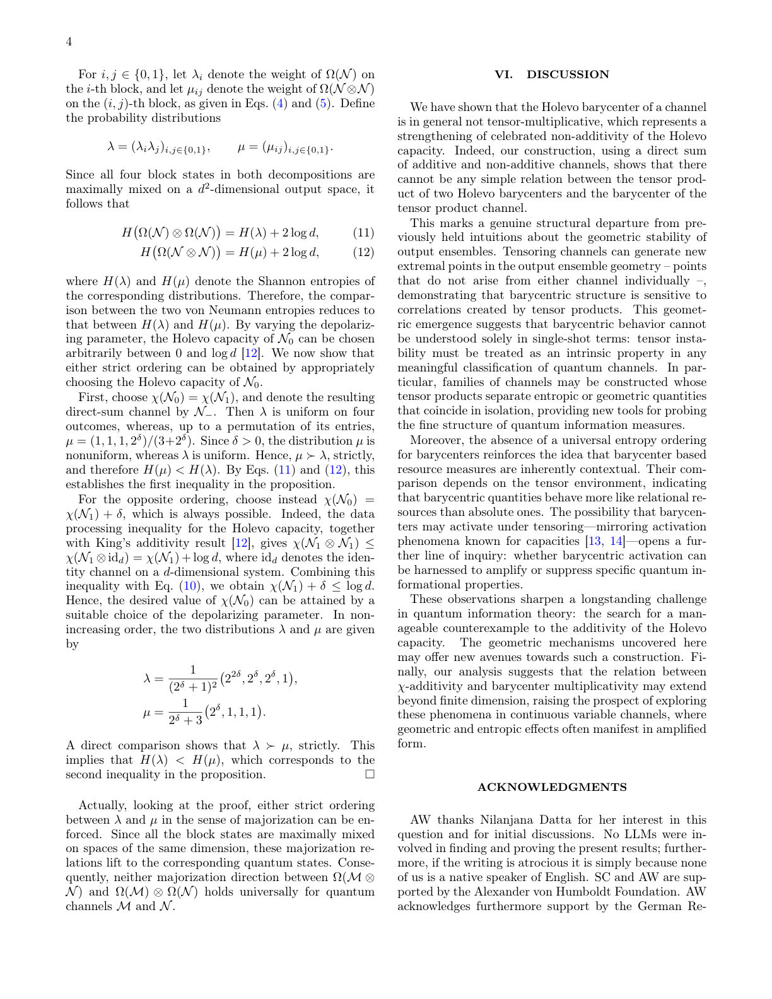
<figcaption class="paper-figure-caption"><b>Fig 3.</b> Low-resolution page preview, page 4</figcaption>
</figure>
<figure class="paper-figure-card">

<figcaption class="paper-figure-caption"><b>Fig 4.</b> Low-resolution page preview, page 5</figcaption>
</figure>
</div>
<p><strong>Summary.</strong> This theoretical paper proves that the Holevo barycenter of a quantum channel is generally not multiplicative under the tensor product. By constructing specific channels, the authors show that the barycenter of the product channel does not equal the tensor product of the individual barycenters. This result deepens our understanding of quantum channel capacities by demonstrating that simple algebraic rules fail even when related concepts like capacity additivity are studied.</p>
<p><strong>Why it may be interesting.</strong> The findings challenge simple tensor product assumptions in quantum information theory, suggesting that complex resource measures like the Holevo barycenter exhibit non-trivial, context-dependent behavior when composing channels.</p>
<details>
<summary>Detailed structure</summary>
<p><strong>Main problem.</strong> The paper investigates the multiplicativity problem for the Holevo barycenter of quantum channels, asking if the barycenter of a product channel equals the tensor product of the individual barycenters.</p>
<p><strong>Main result.</strong> The Holevo barycenter is proven to be non-multiplicative under the tensor product of the channel with itself, and the entropy of the barycenter is neither universally subadditive nor universally superadditive.</p>
<p><strong>Method.</strong> The authors use theoretical derivations comparing block weights derived from the product channel ($\Omega(N \otimes N)$) against the tensor product of the individual barycenters ($\Omega(N) \otimes \Omega(N)$).</p>
<p><strong>Model / system.</strong> The study concerns general quantum channels $N: L(H) 	o L(K)$ acting on finite-dimensional Hilbert spaces, often analyzed using direct-sum constructions ($N = N_0 \oplus N_1 \oplus N_2$).</p>
<p><strong>Key observables.</strong> Holevo Capacity ($\chi(N)$), Holevo Barycenter ($\Omega(N)$), Von Neumann Entropy ($H(\cdot)$), and block weights derived from channel compositions.</p>
<p><strong>Important parameters / regimes.</strong> The analysis depends on the structure of the channels, particularly comparing cases where $\chi(N_0) = \chi(N_1)$ versus $\chi(N_0) = \chi(N_1) + \delta$.</p>
<p><strong>Assumptions / limitations.</strong> All Hilbert spaces are assumed to be finite-dimensional. The entropy comparisons rely on specific structural assumptions about the block states.</p>
<p><strong>Paper structure.</strong> The paper establishes the context by relating Holevo capacity additivity to barycenter tensorization. It then constructs specific channels and uses entropy and block weight comparisons to prove the non-multiplicativity of the barycenter and the lack of universal entropic ordering.</p>
</details>
<details>
<summary>Abstract</summary>
<p>The Holevo barycenter of a quantum channel is the unique output state obtained as the average output of any ensemble achieving the Holevo capacity. Given two quantum channels, the multiplicativity problem asks whether this barycenter tensorizes under parallel composition, namely whether the barycenter of the product channel coincides with the tensor product of the individual barycenters. This question is closely related to the additivity problem for the Holevo capacity: additivity implies tensorization of the Holevo barycenter, while tensorization alone is not sufficient for additivity. Although a construction is known that demonstrates the existence of channels with non-additive Holevo capacity, their corresponding Holevo barycenters still tensorize, leaving open whether multiplicativity might ultimately hold universally. Here, we answer this question in the negative by exhibiting channels for which the Holevo barycenter is not multiplicative under the tensor product of the channel with itself. Moreover, we show that the entropy of the Holevo barycenter is neither universally subadditive nor universally superadditive under tensor product.</p>
</details>
<p><sub><a href="#top">↑ back to top</a></sub></p>

<p><a id="paper-2609.10289"></a></p>
<h3 id="on-the-limits-of-quantum-multiparty-simultaneous-communication"><a href="http://arxiv.org/abs/2609.10289v1">On the Limits of Quantum Multiparty Simultaneous Communication</a></h3>
<p><strong>Authors:</strong> Pedro Montealegre, Ivan Rapaport, Jorge Valenzuela<br>
<strong>Type:</strong> theory · <strong>Category:</strong> quantum information and computing · <strong>PDF:</strong> <a href="https://arxiv.org/pdf/2609.10289v1">https://arxiv.org/pdf/2609.10289v1</a><br>
<strong>Analysis basis:</strong> full PDF text, analyzed in chunks</p>
<div class="figure-strip-hint">↔ Scroll figures horizontally</div>
<div class="paper-figures-scroll">
<figure class="paper-figure-card">

<figcaption class="paper-figure-caption"><b>Fig 1.</b> Figure 1</figcaption>
</figure>
</div>
<p><strong>Summary.</strong> This work analyzes the communication complexity of a multiparty coordination problem, showing that while public randomness offers a significant advantage, unentangled quantum communication does not surpass the power of classical private randomness in the bounded-error regime. The research establishes an exponential separation based on the number of players, providing deep insights into the role of shared randomness versus quantum superposition.</p>
<p><strong>Why it may be interesting.</strong> The findings provide fundamental limits on how quantum information can simulate classical coordination mechanisms, which has implications for quantum cryptography and distributed quantum computation protocols.</p>
<details>
<summary>Detailed structure</summary>
<p><strong>Main problem.</strong> The paper establishes an exponential separation between the communication power of classical shared randomness (public coins) and unentangled quantum communication in a multiparty setting.</p>
<p><strong>Main result.</strong> It shows that for the generalized Index Coordination problem, quantum communication without shared entanglement offers no asymptotic advantage over classical private randomness in the bounded-error regime, while public randomness provides a significant advantage.</p>
<p><strong>Method.</strong> The authors employ techniques like the Parity Collapse method and information-pooling arguments, utilizing the Arithmetic Mean-Geometric Mean inequality to derive lower bounds on message size.</p>
<p><strong>Model / system.</strong> The study uses the Simultaneous Message Passing (SMP) model generalized to $k$ players, comparing the resources of classical private randomness, classical public randomness, and unentangled quantum superposition.</p>
<p><strong>Key observables.</strong> Maximum message length required by the players, measured in bits (public coins) or qubits (quantum communication).</p>
<p><strong>Important parameters / regimes.</strong> The number of players ($k$), the input size ($n$), and the error parameter ($\epsilon$).</p>
<p><strong>Assumptions / limitations.</strong> The quantum protocols considered lack shared entanglement or public coins, and the results hold for fixed error parameters $\epsilon$.</p>
<p><strong>Figures summary.</strong> Not specified in the notes, but the paper relies on summarizing bounds in a table (Table 1) comparing message lengths across different models.</p>
<p><strong>Paper structure.</strong> The paper first generalizes the Index Coordination problem to $k$ parties. It then derives lower bounds for the unambiguous and bounded-error regimes using techniques like the RAC inequality and AM-GM inequality, culminating in the explicit separation results.</p>
</details>
<details>
<summary>Abstract</summary>
<p>The Simultaneous Message Passing (SMP) model provides a fundamental framework for comparing classical and quantum communication. For two players, Gavinsky et al. (STOC 2006) established a separation underlying the incomparability of shared randomness and quantum communication: \textsc{Index Coordination} needs $O(\log n)$ public-coin bits but $Ω(n^{1/3})$ bounded-error qubits.   In this work, we establish a multiparty exponential separation through $\operatorname{IC}_{k,n}$, a natural $k$-party generalization of \textsc{Index Coordination}. Public-coin protocols solve it unambiguously with maximum message length $O(\log n)$ bits. In contrast, quantum SMP protocols without shared entanglement or public coins require maximum message length $Ω(n^{1-1/k})$ qubits in the unambiguous regime and $Ω(n^{(k-1)/(k+1)})$ qubits in the bounded-error regime. A classical private-coin protocol matches the unambiguous bound, so quantum communication provides no asymptotic advantage over private randomness in this regime. For fixed error parameters, all constants are independent of $k$, establishing the exponential separation for every integer-valued function $k=k(n)\ge2$, without restricting its growth. Both quantum lower bounds become $Ω(n)$ when $k\ge c\log n$ for any fixed $c>0$, matching the full-input protocol and yielding tight linear complexity in both regimes.   Our results demonstrate that quantum superposition cannot efficiently simulate the coordination afforded by public randomness, extending this separation to arbitrary $k$. To bound success probabilities for multiparty product states, we prove an exact factorization theorem for unambiguous quantum state identification, which may be of independent mathematical interest.</p>
</details>
<p><sub><a href="#top">↑ back to top</a></sub></p>

<p><a id="paper-2609.10520"></a></p>
<h3 id="private-communication-via-zero-private-capacity-quantum-channels"><a href="http://arxiv.org/abs/2609.10520v1">Private communication via zero-private-capacity quantum channels</a></h3>
<p><strong>Authors:</strong> Chengkai Zhu, Xin Wang<br>
<strong>Type:</strong> theory · <strong>Category:</strong> quantum information and computing · <strong>PDF:</strong> <a href="https://arxiv.org/pdf/2609.10520v1">https://arxiv.org/pdf/2609.10520v1</a><br>
<strong>Analysis basis:</strong> full PDF text, analyzed in chunks</p>
<div class="figure-strip-hint">↔ Scroll figures horizontally</div>
<div class="paper-figures-scroll">
<figure class="paper-figure-card">

<figcaption class="paper-figure-caption"><b>Fig 1.</b> Figure 1: Logical dependencies of the formalized argument for 1/2 ≤p &lt; 1. Arrows run from proof ingredients to conclusions, with each box grouping the relevant Lean declarations. The final capacity statement uses the regularized information formula.</figcaption>
</figure>
</div>
<p><strong>Summary.</strong> This paper tackles the superactivation problem in quantum information theory by demonstrating that two quantum channels, each having zero private capacity, can jointly support private communication. The authors achieve this by constructing a specific joint channel that yields a positive secure rate. This result proves that secure communication capacity cannot be determined by analyzing the private capacity of the individual channels in isolation.</p>
<p><strong>Why it may be interesting.</strong> It provides a deep theoretical result showing that local capacity measures are insufficient for characterizing secure quantum communication, which is a fundamental question in quantum information theory.</p>
<details>
<summary>Detailed structure</summary>
<p><strong>Main problem.</strong> The paper resolves the 'private-capacity superactivation' problem: determining if two quantum channels, each with zero individual private capacity, can jointly enable private communication.</p>
<p><strong>Main result.</strong> The joint use of a four-level channel and a qubit erasure channel, both having zero private capacity, was shown to achieve a positive private rate, demonstrating that channel private capacity alone is insufficient to determine secure communication capability.</p>
<p><strong>Method.</strong> The analysis involves constructing specific quantum channels and applying information-theoretic bounds, utilizing concepts like Holevo information and classical coding over multiple uses to establish a positive lower bound on the achievable private rate.</p>
<p><strong>Model / system.</strong> The model uses two independent, memoryless quantum channels: a four-level channel and a qubit erasure channel. The analysis is highly abstract, relying on mathematical constructions and formal proofs in Lean 4.</p>
<p><strong>Key observables.</strong> Private bits per product use, Holevo information ($\chi$), and the achievable rate $P(E_{2,p} \otimes N)$.</p>
<p><strong>Important parameters / regimes.</strong> Erasure probability $p$ (specifically $p=1/2$), and the positive rate exceeding $1.9030 	imes 10^{-4}$ bits.</p>
<p><strong>Assumptions / limitations.</strong> The proof relies on bounding the environment's leakage using a 'Classical coin bound' and assumes the applicability of the private coding theorem.</p>
<p><strong>Figures summary.</strong> Figure 1 summarizes the logical dependencies of the formalized argument, while Table 1 provides a detailed correspondence between paper statements and their Lean declarations.</p>
<p><strong>Paper structure.</strong> The paper develops the problem by first establishing the necessary information-theoretic bounds (using Holevo information and entropy curvature) and then constructing a concrete example (the joint channel use) to achieve a positive rate, culminating in a formalization within the Lean proof assistant.</p>
</details>
<details>
<summary>Abstract</summary>
<p>Private communication over a noisy quantum channel requires reliable transmission to the receiver and secrecy from the environment. Whether two channels with zero private capacity can jointly enable private communication is a longstanding open problem in quantum information theory. Here we resolve this problem by exhibiting a four-level channel and a qubit erasure channel with half erasure probability, each with zero private capacity, whose joint use achieves more than 0.0001903 private bits per product use. The encoding gives the receiver a linear information gain with at most quadratic environmental leakage, enabling privacy through a fixed joint measurement and classical coding. This superactivation, impossible for independent classical memoryless wiretap channels, shows that a channel's private capacity alone does not determine its value for secure communication. The initial activation example was identified through interactions with large language models, and the result has been formalized in Lean 4.</p>
</details>
<p><sub><a href="#top">↑ back to top</a></sub></p>

<p><a id="paper-2609.10463"></a></p>
<h3 id="protected-domains-and-the-cost-of-cooperation-on-weighted-networks"><a href="http://arxiv.org/abs/2609.10463v1">Protected domains and the cost of cooperation on weighted networks</a></h3>
<p><strong>Authors:</strong> Abhishek Chowdhury<br>
<strong>Type:</strong> theory · <strong>Category:</strong> statistical mechanics · <strong>PDF:</strong> <a href="https://arxiv.org/pdf/2609.10463v1">https://arxiv.org/pdf/2609.10463v1</a><br>
<strong>Analysis basis:</strong> full PDF text, analyzed in chunks</p>
<div class="figure-strip-hint">↔ Scroll figures horizontally</div>
<div class="paper-figures-scroll">
<figure class="paper-figure-card">

<figcaption class="paper-figure-caption"><b>Fig 1.</b> FIG. 1. Small supports distinguish establishment mechanisms. P4 represents the paths with at most four sites that do not promote at weak selection. C4 is a minimal promoter, P5 the smallest promoting path, and P6 the smallest path approaching threshold one. Edge labels are relative weights; line thickness does not encode their magnitude. Filled sites are dynamically protected pins, not fixed external spins. The limits are q →∞, q2/Q →0 on C4; 1 ≪q ≪A ≪Q on P5; and q →∞, q/Q →0 on P6. The six-site construction extends to every fixed longer path.</figcaption>
</figure>
<figure class="paper-figure-card">
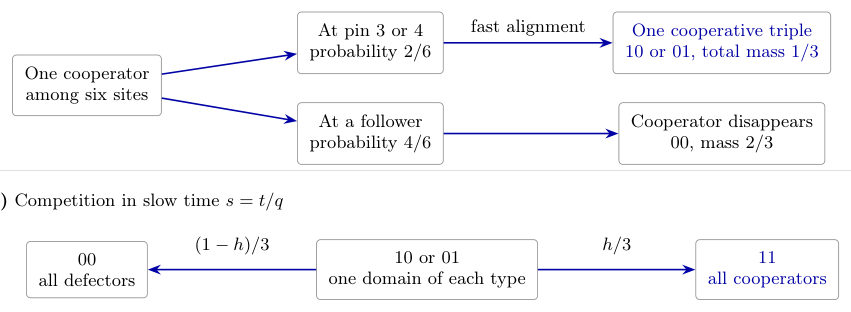
<figcaption class="paper-figure-caption"><b>Fig 2.</b> FIG. 2. The initial individual and the eventual domain competitor. The upper panel distinguishes pin introductions, which establish an aligned triple in the hierarchy limit, from follower introductions, which disappear. The lower panel is the resulting four-state process in slow time s = t/q; its arrows are rates in that clock. The entrance weights belong to the original uniform- singleton experiment. A pin is slowly overwritten, not externally fixed at finite weights.</figcaption>
</figure>
<figure class="paper-figure-card">
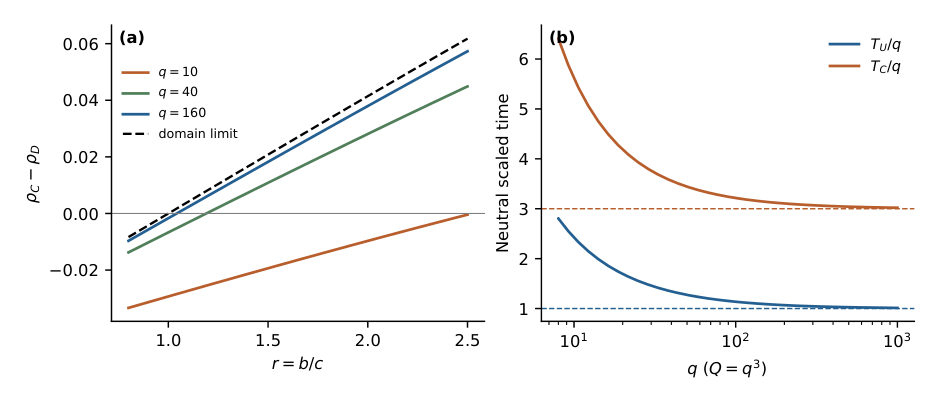
<figcaption class="paper-figure-caption"><b>Fig 3.</b> FIG. 3. Finite microscopic checks on (q3, q, 1, q, q3). (a) The complete committor calculation for exponential fecundity at κ = δc = 0.25, compared with the limiting advantage 1 3 tanh[κ(b/c −1)/2]. (b) Neutral mean absorption times approach TU/q = 1 and TC/q = 3. The two panels test selected fixation and neutral time separately. This family illustrates the mechanism; the optimal contact design is determined below.</figcaption>
</figure>
<figure class="paper-figure-card">

<figcaption class="paper-figure-caption"><b>Fig 4.</b> FIG. 4. The analytical leading time–contrast frontiers, nor- malized by each support’s least-contrast design. Extra con- trast shortens the invasion while retaining its threshold tar- get. Dotted lines indicate the time-only limiting infima. Each curve concerns its own threshold floor and the same global at- tempt clock.</figcaption>
</figure>
<figure class="paper-figure-card">
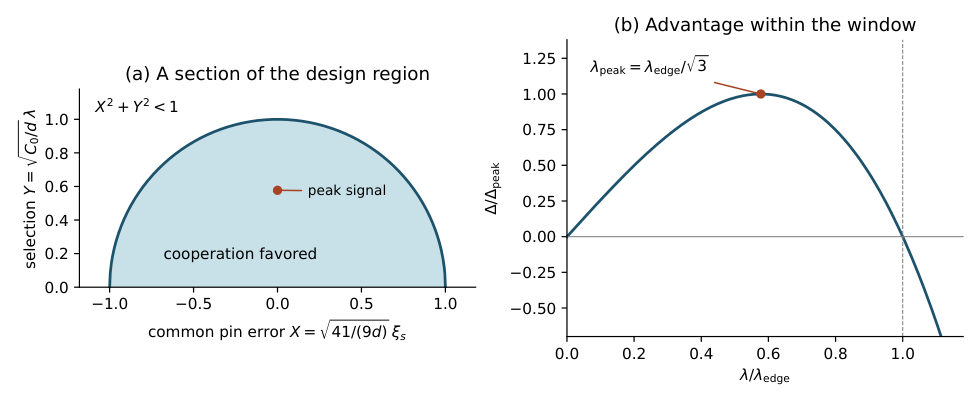
<figcaption class="paper-figure-caption"><b>Fig 5.</b> FIG. 5. The leading joint tolerance and signal. (a) With saturated cores and no pin imbalance, X = p</figcaption>
</figure>
</div>
<p><strong>Summary.</strong> This work analyzes the conditions for the spread of costly cooperation on weighted networks by modeling a donation game. It derives sharp mathematical thresholds for the benefit-to-cost ratio required for cooperation to invade. The methodology uses advanced techniques from non-equilibrium statistical mechanics to quantify the structural requirements for collective traits to persist against natural selection.</p>
<p><strong>Why it may be interesting.</strong> The rigorous mathematical framework for analyzing the emergence of cooperation via selection thresholds on complex networks connects concepts from statistical physics (non-equilibrium dynamics, critical phenomena) to evolutionary game theory.</p>
<details>
<summary>Detailed structure</summary>
<p><strong>Main problem.</strong> The paper investigates the conditions under which costly cooperation can spread and persist within a population structured on a weighted network.</p>
<p><strong>Main result.</strong> It determines sharp weak-selection thresholds for cooperation, finding specific ratios of benefit to cost ($b/c$) required for fixation on different network structures like cycles and paths.</p>
<p><strong>Method.</strong> The analysis employs techniques from non-equilibrium statistical mechanics, including fluctuation response, first-passage time calculations, and optimization over network weights.</p>
<p><strong>Model / system.</strong> The model is a donation game played on a finite, weighted, undirected graph where traits (cooperator/defector) are inherited via copying based on weighted contacts.</p>
<p><strong>Key observables.</strong> Weak-selection threshold ($b/c$), fixation advantage ($\Delta$), and the minimal contact contrast required for a given threshold.</p>
<p><strong>Important parameters / regimes.</strong> The selection strength ($\epsilon$), the benefit ($b$), the cost ($c$), and the network topology (e.g., $C_4, P_5, P_6$).</p>
<p><strong>Assumptions / limitations.</strong> The analysis is restricted to the source-first, averaged-payoff process, and comparisons are made between individual payoff dominance and population-level fixation advantage.</p>
<p><strong>Figures summary.</strong> Figures illustrate small supports, showing the minimal promoter structures for cooperation on a four-cycle ($C_4$), five-site path ($P_5$), and six-site path ($P_6$).</p>
<p><strong>Paper structure.</strong> The paper progresses from defining the game and dynamics on weighted networks, to calculating fixation probabilities and susceptibility, and finally performing rigorous optimization to find the minimal structural requirements for sustained cooperation.</p>
</details>
<details>
<summary>Abstract</summary>
<p>A costly inherited trait can spread when its descendants create a favorable local environment. We ask which finite contact structures sustain such a collective competitor and what their advantage costs. Individuals play a donation game, conferring benefit $b$ at cost $c$. Reciprocal weighted contacts determine averaged payoffs and copying recipients, while sources are chosen globally according to payoff. Cooperation is favored when a uniformly introduced cooperator takes over more often than a defector in the complementary experiment. Exact fluctuation response and elimination of fast configurations identify the formation and competition of protected domains as the controlling processes. The sharp weak-selection threshold infima are $b/c=3$ on the four-cycle, $7$ on the five-site path, and $1$ on every fixed path with at least six sites. On the six-site path, a global bound forces near-barrier designs into this domain hierarchy. Polynomial relations among the contact ratios then control unrestricted optimization and imply eventual exact reflection symmetry. Reaching threshold $1+ε$ requires minimum contact contrast $656ε^{-2}[1+O(ε)]$ and neutral absorption time of order $ε^{-1}$. We determine their tradeoff and the associated design tolerance. Finite selection consumes the same margin. Within the controlled small-selection window, the maximal fixation advantage is of order $ε^{5/2}$ when the contrast exceeds its exact minimum by order $ε^{-1}$. Thus an improving invasion threshold can require increasing contact heterogeneity, precision and observation time.</p>
</details>
<p><sub><a href="#top">↑ back to top</a></sub></p>

<p><a id="paper-2609.10505"></a></p>
<h3 id="quantum-feature-engineering-for-credit-default-prediction-when-and-why-iqp-circuits-help-linear-classifiers"><a href="http://arxiv.org/abs/2609.10505v1">Quantum Feature Engineering for Credit Default Prediction: When and Why IQP Circuits Help Linear Classifiers</a></h3>
<p><strong>Authors:</strong> Menachem Finkelstein, Diana Legziel Levy, Zohar Yakhini, Sarel Cohen<br>
<strong>Type:</strong> theory · <strong>Category:</strong> quantum information and computing · <strong>PDF:</strong> <a href="https://arxiv.org/pdf/2609.10505v1">https://arxiv.org/pdf/2609.10505v1</a><br>
<strong>Analysis basis:</strong> full PDF text, analyzed in chunks</p>
<div class="figure-strip-hint">↔ Scroll figures horizontally</div>
<div class="paper-figures-scroll">
<figure class="paper-figure-card">

<figcaption class="paper-figure-caption"><b>Fig 1.</b> Fig. 1. The 8-qubit IQP feature extractor (five of the eight wires shown; qubits 4–6 and the couplings (3, 4) . . . (6, 7) are elided). Left to right: a Hadamard superposition layer, an RZ(θi) data-encoding layer, and an ISINGZZ entanglement layer. Each qubit is then measured in the Pauli X and Y bases, producing 2n = 16 output features; that transverse read-out plays the role of the canonical IQP form’s closing basis change, and is why ⟨Z⟩is identically zero and excluded. Topology: the ZZ couplings form a ring on the 8 qubits—exactly the 8 edges (1, 2), (2, 3), . . . , (7, 8), (8, 1), each applied at its own time step. The dashed line is the wrap-around edge (8, 1) that closes the ring; it...</figcaption>
</figure>
</div>
<p><strong>Summary.</strong> This work tests if quantum feature engineering, implemented via an IQP circuit, can boost credit default prediction accuracy beyond what is achievable with classical feature extraction methods like Kernel PCA. By appending 16 quantum features to a Logistic Regression model, the authors achieved a statistically significant performance gain, suggesting that quantum circuits can effectively map classical data into a richer feature space beneficial for linear classifiers.</p>
<p><strong>Why it may be interesting.</strong> It explores the practical application of quantum feature mapping in a real-world, high-stakes classification problem, providing quantitative evidence for the potential utility of quantum circuits in enhancing classical machine learning models.</p>
<details>
<summary>Detailed structure</summary>
<p><strong>Main problem.</strong> The paper investigates whether quantum feature engineering using Instantaneous Quantum Polynomial-time (IQP) circuits can provide a statistically significant advantage in improving a linear classifier for credit default prediction over classical methods.</p>
<p><strong>Main result.</strong> Appending 16 IQP features to a Logistic Regression model raised the F1 score by +0.055, significantly outperforming Kernel PCA (0.493) and the raw baseline (0.462), with the advantage surviving rigorous statistical correction.</p>
<p><strong>Method.</strong> The authors encode classical financial features into rotation angles ($ heta_i$) and use an $n$-qubit IQP circuit (Hadamard $
ightarrow R_Z 
ightarrow ZZ$ ring) to generate $2n$ expectation values as quantum features, which are then used in a Logistic Regression model.</p>
<p><strong>Model / system.</strong> The model is an $n$-qubit IQP circuit, which runs in constant depth and encodes feature correlations in a $2^n$-dimensional Hilbert space. The quantum features are appended to the original classical features for classification.</p>
<p><strong>Key observables.</strong> F1 score, Accuracy, AUC, and the expectation values $\langle X_i 
angle$ and $\langle Y_i 
angle$ for each qubit.</p>
<p><strong>Important parameters / regimes.</strong> Number of qubits ($n=8$), number of features (16 quantum features), and the feature budget constraint used for comparison.</p>
<p><strong>Assumptions / limitations.</strong> The quantum advantage is demonstrated on a classical simulator, and the comparison is specifically limited to improving a linear classifier, suggesting a mechanism of external non-linearity injection.</p>
<p><strong>Figures summary.</strong> Figure 1 illustrates the 8-qubit IQP feature extractor sequence: Hadamard superposition $
ightarrow R_Z$ data-encoding $
ightarrow ZZ$ ring entanglement, followed by X and Y basis measurements.</p>
<p><strong>Paper structure.</strong> The paper establishes the problem (credit risk), details the quantum feature construction (IQP circuit), compares the resulting features against classical benchmarks (KPCA, linear transformations) using rigorous statistical testing (BH correction), and analyzes the mechanism of improvement (linearity).</p>
</details>
<details>
<summary>Abstract</summary>
<p>Credit default prediction is a tabular classification problem in which modest gains in F1 translate directly into reduced financial exposure. We ask whether Instantaneous Quantum Polynomial-time (IQP) circuits can produce features that improve a classifier over both its raw classical baseline and Kernel PCA - the strongest unsupervised classical non-linear alternative - at an equal feature budget. The dataset provides 23 financial attributes per client; for an n-qubit circuit we select n of them, encode each as a rotation angle, and read 2n expectation values back out as new features. The motivation for using a quantum circuit is computational: an n-qubit IQP circuit runs in constant depth and encodes feature correlations in a 2^n-dimensional Hilbert space, whereas classical simulation of its exact output statistics scales exponentially in n. Using the UCI Default of Credit Card Clients dataset and five-fold cross-validation, we find that appending 16 IQP features (n = 8 qubits) to a Logistic Regression model raises F1 from 0.462 to 0.517 (+0.055, p &lt; 0.0001). Kernel PCA, the next-best method, reaches only 0.493 at the same feature count; the gap survives Benjamini-Hochberg correction across 12 tests (p = 0.00007). No other classifier - Random Forest, SVM, XGBoost, or k-NN - benefits, which points to a linear-expressivity mechanism rather than a generic improvement. We also show that how the 8 input features are chosen matters: Random Forest importance-guided selection reaches F1 = 0.523, while encoding maximally uncorrelated features drops it to 0.496, demonstrating that the circuit amplifies informative structure rather than creating it from scratch.</p>
</details>
<p><sub><a href="#top">↑ back to top</a></sub></p>

<p><a id="paper-2609.10006"></a></p>
<h3 id="signature-of-short-range-order-in-static-response-of-the-three-dimensional-electron-gas"><a href="http://arxiv.org/abs/2609.10006v1">Signature of Short-Range Order in Static Response of the Three-Dimensional Electron Gas</a></h3>
<p><strong>Authors:</strong> Muhammed H. Güneş, Yubo Yang, Vitaly Gorelov, Miguel A. Morales, Matteo Gatti, Lucia Reining, Shiwei Zhang<br>
<strong>Type:</strong> theory · <strong>Category:</strong> strongly correlated electrons · <strong>PDF:</strong> <a href="https://arxiv.org/pdf/2609.10006v1">https://arxiv.org/pdf/2609.10006v1</a><br>
<strong>Analysis basis:</strong> full PDF text, analyzed in chunks</p>
<div class="figure-strip-hint">↔ Scroll figures horizontally</div>
<div class="paper-figures-scroll">
<figure class="paper-figure-card">

<figcaption class="paper-figure-caption"><b>Fig 1.</b> FIG. 1. Local field factor G(q) of the electron gas for (a)–(e) rs = 5, 30, 50, 70, and 100. DMC data are shown as circles, obtained with Ne = 54 electrons, except for rs = 70, where Ne = 162. The solid line is our fit defined in Eq. (2), and dashdotted line is the analytical parametrization extrapolated by Ref. [24]. Dashed lines represent the low- and high-q limits.</figcaption>
</figure>
<figure class="paper-figure-card">
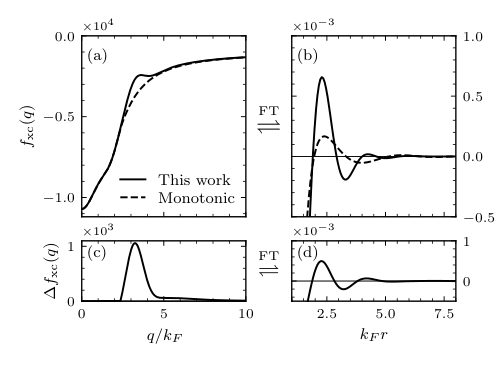
<figcaption class="paper-figure-caption"><b>Fig 2.</b> FIG. 2. Exchange-correlation kernel fxc at rs = 90. The solid line is obtained from our fitted G(q), while the dashed line is obtained by manually removing the feature from the solid curve. Panel (a) shows fxc as a function of wave vector, while panel (c) shows the difference between the solid and dashed lines in (a). Panels (b) and (d) are the Fourier trans- forms of (a) and (c), respectively.</figcaption>
</figure>
<figure class="paper-figure-card">

<figcaption class="paper-figure-caption"><b>Fig 3.</b> FIG. 3. (a) Static density response function χ(q) of the elec- tron gas for rs = 20–100 calculated from the analytical fit to our DMC data [Eq. (2)]. The dashed line shows the non- interacting response χ0(q). (b) The ratio χ(q)/χ0(q) of the curves in (a). (c) Static structure factor S(q) at rs = 100. Circles: direct computation (via equal-time pair correlation from separate DMC with Ne = 250), solid and dash-dotted lines: SMA results obtained through our χ(q) and the Cor- radini et al. parametrization, respectively. In all panels, the black arrows mark the first and second peak positions; red arrows mark the midpoint between the peaks. SMA results are scaled for better visibility.</figcaption>
</figure>
<figure class="paper-figure-card">

<figcaption class="paper-figure-caption"><b>Fig 4.</b> FIG. 4. (a) Dynamic structure factor S(q, ω) for rs = 90 calculated using the static G(q) as the xc kernel in the linear- response χ(q, ω). Solid orange line: collective mode dispersion from the peak of S(q, ω). Dashed line: the non-interacting dis- persion, ω0q = q2/2. Data points: collective mode dispersion using DMC S(q) as input for SMA, i.e. ωq = q2/[2S(q)]. (b) The solid orange line in (a) divided by ω0q. The white and red arrows mark the dips and peaks, respectively.</figcaption>
</figure>
</div>
<p><strong>Summary.</strong> This work uses Diffusion Monte Carlo simulations to calculate the static response functions of the 3D electron gas in the strongly coupled regime. The authors identify a distinct structural feature in the local field factor G(q) at intermediate wave vectors. This feature is argued to be a direct signature of short-range order, providing a crucial benchmark for understanding electronic correlations beyond simple approximations.</p>
<p><strong>Why it may be interesting.</strong> The study provides benchmark data on electronic correlations in a fundamental model, which is crucial for developing accurate theoretical inputs for many-body calculations relevant to correlated materials.</p>
<details>
<summary>Detailed structure</summary>
<p><strong>Main problem.</strong> The study aims to accurately determine the wave-vector-dependent static local field factor G(q) and the static density-density response function for the 3D electron gas, particularly in the strongly coupled (low-density) regime.</p>
<p><strong>Main result.</strong> The calculations reveal a pronounced, non-trivial structure in G(q) at intermediate wave vectors, which is identified as a fingerprint of short-range order and is necessary to correctly reproduce the static structure factor.</p>
<p><strong>Method.</strong> The primary method involves using Diffusion Monte Carlo (DMC) simulations to calculate the response functions, which are then analyzed using theoretical parametrizations.</p>
<p><strong>Model / system.</strong> The system modeled is the three-dimensional electron gas (HEG), a fundamental model in condensed matter physics used as a starting point for ab initio calculations of materials.</p>
<p><strong>Key observables.</strong> Static local field factor G(q), static density-density response function $\chi(q)$, and the static structure factor $S(q)$.</p>
<p><strong>Important parameters / regimes.</strong> The Wigner-Seitz radius ($r_s$), which controls the coupling strength, is varied across the strongly coupled regime ($r_s > 10$).</p>
<p><strong>Assumptions / limitations.</strong> The analysis relies on DMC calculations for benchmark data and utilizes the Single-Mode Approximation (SMA) for certain derived quantities.</p>
<p><strong>Figures summary.</strong> Figures illustrate G(q) vs $r_s$ showing the structural feature, the exchange-correlation kernel $f_{	ext{xc}}(r)$ confirming real-space structure, and $\chi(q)$ and $S(q)$ showing the correlated structure.</p>
<p><strong>Paper structure.</strong> The paper establishes the physical problem, presents DMC calculations of $\chi(q)$ and $G(q)$ across various densities, identifies the structural feature in $G(q)$ required by $S(q)$, and discusses the implications for low-energy resonant modes.</p>
</details>
<details>
<summary>Abstract</summary>
<p>The three-dimensional electron gas is a fundamental model in condensed matter physics and quantum chemistry, and the exchange-correlation energy derived from it serves as the starting point of \textit{ab initio} computations of materials. However, the wave-vector-dependent response, and hence the static local field factor $G(q)$, has remained without accurate ground-state benchmark in the strongly coupled regime for three decades. Using diffusion Monte Carlo, we calculate $G(q)$ and the static density-density response function across the liquid phase and find a pronounced structure in $G(q)$ at intermediate wave vectors, already visible at metallic densities and growing with increasing interaction strength. We identify it as a fingerprint of short-range order by showing that it is required to reproduce the static structure factor. Our parametrization, valid in the entire liquid phase, predicts a low-energy resonant mode inside the particle-hole continuum.</p>
</details>
<p><sub><a href="#top">↑ back to top</a></sub></p>

<p><a id="paper-2609.09847"></a></p>
<h3 id="simple-qkd-keyrate-computations-from-tangent-line-bounds"><a href="http://arxiv.org/abs/2609.09847v1">Simple QKD keyrate computations from tangent-line bounds</a></h3>
<p><strong>Authors:</strong> Jun Hui Goh, Ernest Y. -Z. Tan<br>
<strong>Type:</strong> theory · <strong>Category:</strong> quantum information and computing · <strong>PDF:</strong> <a href="https://arxiv.org/pdf/2609.09847v1">https://arxiv.org/pdf/2609.09847v1</a><br>
<strong>Analysis basis:</strong> full PDF text, analyzed in chunks</p>
<div class="figure-strip-hint">↔ Scroll figures horizontally</div>
<div class="paper-figures-scroll">
<figure class="paper-figure-card">

<figcaption class="paper-figure-caption"><b>Fig 1.</b> FIG. 1. Keyrate as a function of the number of tangent lines. The grid search used to plot this graph was 40 × 40. The plot is not monotone because for each ntangent we took the tangent lines at uniformly spaced points over Q ∈[0, 1], which results in the set of tangent lines for each ntangent not being a subset of those for ntangent + 1.</figcaption>
</figure>
<figure class="paper-figure-card">
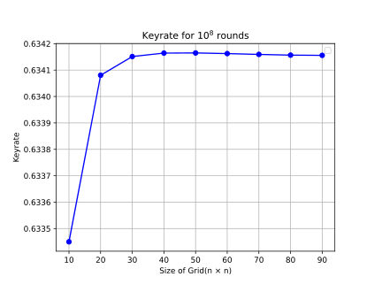
<figcaption class="paper-figure-caption"><b>Fig 2.</b> FIG. 2. Plot of keyrate value as the grid size of the grid search increases. 100 tangent lines were used in the approximation of the convex optimisation.</figcaption>
</figure>
<figure class="paper-figure-card">
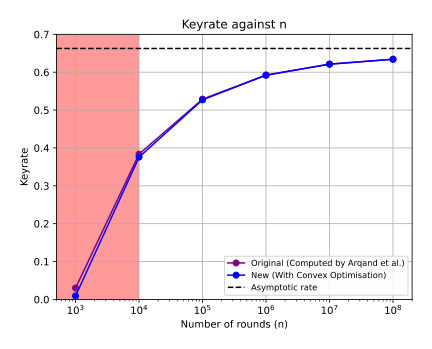
<figcaption class="paper-figure-caption"><b>Fig 3.</b> FIG. 3. Plot comparing the achievable keyrate com- puted by the original authors to that computed by our proposed methodology, using the values of α and γ found in [1]. The purple graph plots the values com- puted by the original authors. The blue graph plots the val- ues computed using the proposed methodology, with the val- ues of α and γ found in [1]. The dashed black line shows the asymptotic keyrate for our parameter choices, which is rasymp = 0.663. We caution however that the results dis- played for n &lt;∼104 (red region in figure) may correspond to significant abort probability during error correction; see Re- mark 1.</figcaption>
</figure>
<figure class="paper-figure-card">

<figcaption class="paper-figure-caption"><b>Fig 4.</b> FIG. 4. Plot comparing the achievable keyrate com- puted by our proposed methodology, including the grid search to find the optimal value of γ and α, using different parametrisation of β and Kα. The blue graph plots the values computed using (6). The green graph plots the values computed using (7). The dashed black line shows the asymptotic keyrate for our parameter choices, which is rasymp = 0.663. We caution however that the results dis- played for n &lt;∼104 (red region in figure) may correspond to significant abort probability during error correction; see Re- mark 1.</figcaption>
</figure>
<figure class="paper-figure-card">
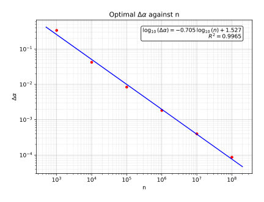
<figcaption class="paper-figure-caption"><b>Fig 5.</b> FIG. 5. Plot of the optimal ∆α against the number of rounds. Linear regression was performed on the values and a R2-value of 0.9965 was found.</figcaption>
</figure>
</div>
<p><strong>Summary.</strong> This paper develops a novel, computationally efficient method to calculate certified lower bounds on the keyrates for QKD protocols like BB84. By reformulating complex optimization problems using tangent-line approximations, the authors make these calculations tractable for standard convex solvers. This advances the theoretical understanding of achievable secure key rates in quantum cryptography.</p>
<p><strong>Why it may be interesting.</strong> The rigorous mathematical techniques developed for bounding keyrates using convex optimization and tangent lines provide powerful, generalizable tools for analyzing information-theoretic security in quantum communication.</p>
<details>
<summary>Detailed structure</summary>
<p><strong>Main problem.</strong> The paper addresses the computation of finite-size keyrates for Quantum Key Distribution (QKD) protocols, aiming to provide certified lower bounds.</p>
<p><strong>Main result.</strong> The authors propose using tangent-line approximations to transform complex, non-convex optimization problems into computationally tractable convex forms, yielding certified lower bounds for the keyrate.</p>
<p><strong>Method.</strong> The core method involves reformulating the keyrate optimization problem to utilize convex optimization solvers by deriving suitable tangent lines to the lower bound terms in the objective function.</p>
<p><strong>Model / system.</strong> The analysis focuses on QKD protocols, specifically the qubit BB84 and the six-state protocol, often modeled using entanglement-based forms and Werner states.</p>
<p><strong>Key observables.</strong> Finite-size keyrate ($\ell_{	ext{key}}$), Rényi entropy ($   ext{H}^{\uparrow}<em _alpha="\alpha">{\alpha},     ext{H}^{\downarrow}</em>$).}$), and the asymptotic keyrate ($    ext{r}_{    ext{asymp}</p>
<p><strong>Important parameters / regimes.</strong> Rényi entropy parameter ($\alpha$), security parameter ($\varepsilon_{	ext{secure}}$), and test-round probability ($\gamma$).</p>
<p><strong>Assumptions / limitations.</strong> The keyrate bound is derived using a tangent-line lower bound approximation, meaning the computed rate is guaranteed to be less than or equal to the true achievable rate.</p>
<p><strong>Figures summary.</strong> Figures illustrate the convergence of the computed keyrate as the number of tangent lines or the grid size increases, showing the rate plateaus at sufficient computational effort.</p>
<p><strong>Paper structure.</strong> The paper first introduces the general problem of keyrate computation via convex optimization, then details the tangent-line approximation technique for simple protocols like BB84, and finally extends this to derive closed-form entropy expressions for the six-state protocol.</p>
</details>
<details>
<summary>Abstract</summary>
<p>Recent work in quantum key distribution (QKD) has yielded finite-size keyrates based on convex optimisation problems, using the framework of entropy accumulation. Multiple solvers have been developed to address these optimisations in recent years, but have been based on a somewhat elaborate framework using sophisticated algorithms, in order to accommodate a broad range of QKD protocols. In this work, we note that for basic QKD protocols such as qubit BB84, the keyrates can be easily computed using off-the-shelf solvers instead, by obtaining suitable tangent lines to lower bound terms in the objective function. We compute the resulting finite-size keyrates and compare them to previous work. Moreover, we extend this approach to the six-state protocol, by deriving closed-form expressions for the single-round Rényi entropies in the protocol. This should facilitate subsequent study of the six-state protocol via entropy accumulation.</p>
</details>
<p><sub><a href="#top">↑ back to top</a></sub></p>

<p><a id="paper-2609.09804"></a></p>
<h3 id="small-bias-quantum-approximate-counting-via-the-multiplicative-adversary-method"><a href="http://arxiv.org/abs/2609.09804v1">Small-Bias Quantum Approximate Counting via the Multiplicative Adversary Method</a></h3>
<p><strong>Authors:</strong> Albert Lin, Han-Hsuan Lin<br>
<strong>Type:</strong> theory · <strong>Category:</strong> quantum information and computing · <strong>PDF:</strong> <a href="https://arxiv.org/pdf/2609.09804v1">https://arxiv.org/pdf/2609.09804v1</a><br>
<strong>Analysis basis:</strong> full PDF text, analyzed in chunks</p>
<div class="figure-strip-hint">↔ Scroll figures horizontally</div>
<div class="paper-figures-scroll">
<figure class="paper-figure-card">

<figcaption class="paper-figure-caption"><b>Fig 1.</b> Low-resolution page preview, page 2</figcaption>
</figure>
<figure class="paper-figure-card">
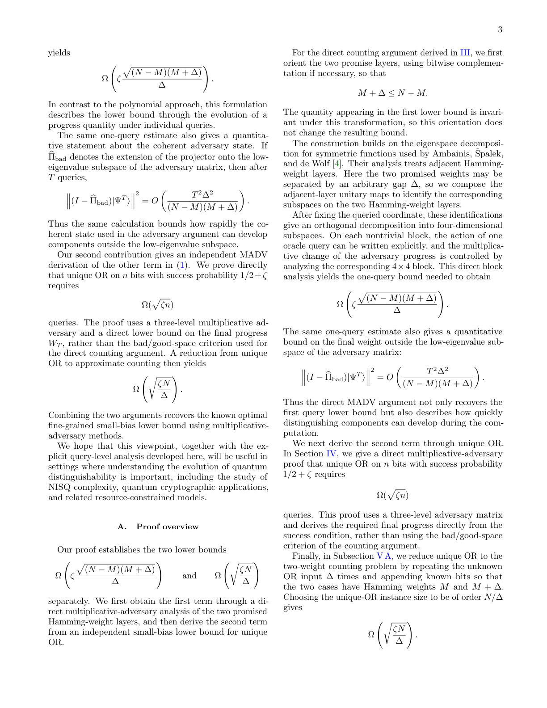
<figcaption class="paper-figure-caption"><b>Fig 2.</b> Low-resolution page preview, page 3</figcaption>
</figure>
<figure class="paper-figure-card">
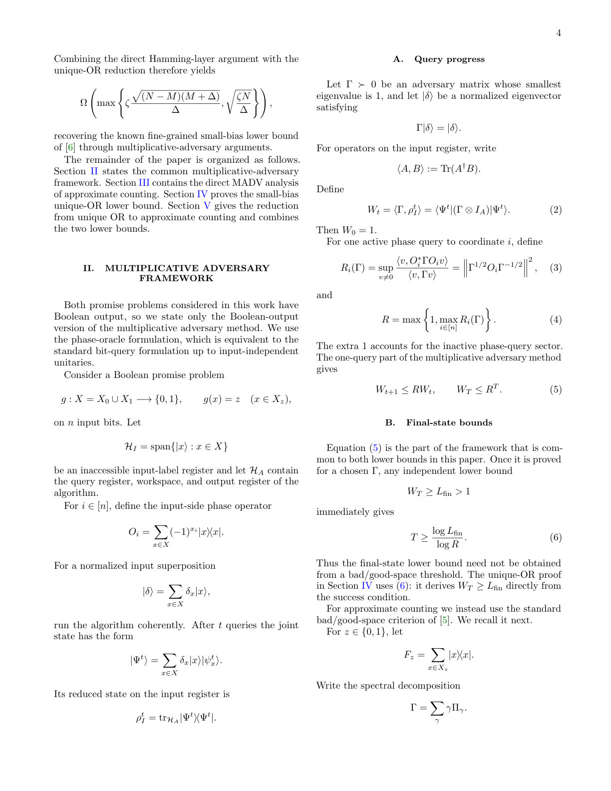
<figcaption class="paper-figure-caption"><b>Fig 3.</b> Low-resolution page preview, page 4</figcaption>
</figure>
<figure class="paper-figure-card">
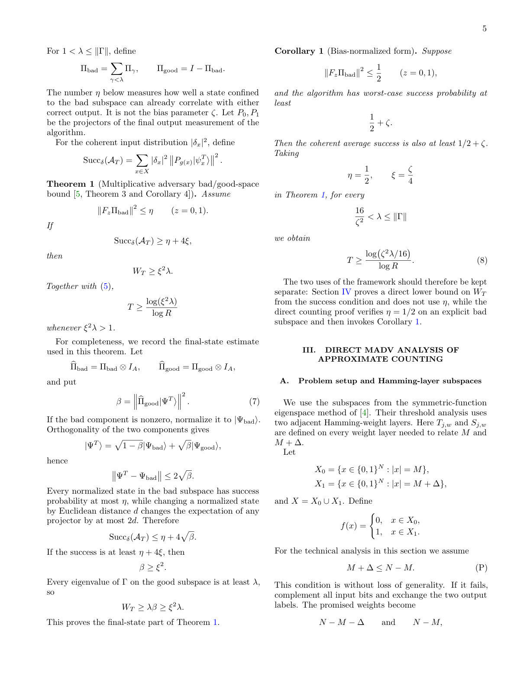
<figcaption class="paper-figure-caption"><b>Fig 4.</b> Low-resolution page preview, page 5</figcaption>
</figure>
<figure class="paper-figure-card">
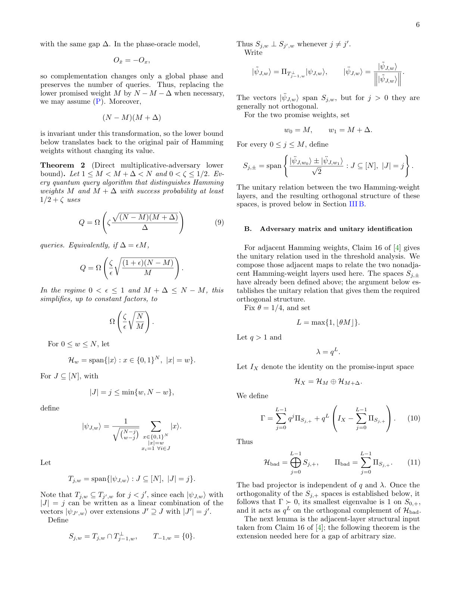
<figcaption class="paper-figure-caption"><b>Fig 5.</b> Low-resolution page preview, page 6</figcaption>
</figure>
</div>
<p><strong>Summary.</strong> This paper derives tight, fine-grained lower bounds for the quantum query complexity of distinguishing between two Hamming weights using the Multiplicative Adversary Method. By relating this problem to the unique OR problem, the authors establish a complex lower bound that precisely characterizes the required number of quantum queries in the small-bias regime.</p>
<p><strong>Why it may be interesting.</strong> The rigorous application of the multiplicative adversary method to derive fine-grained lower bounds provides a powerful, query-by-query understanding of quantum distinguishability, which is relevant for understanding resource scaling in quantum algorithms.</p>
<details>
<summary>Detailed structure</summary>
<p><strong>Main problem.</strong> The paper studies the quantum query complexity required to distinguish between two specific Hamming weights, $|x|=M$ versus $|x|=M+\Delta$, in the small-bias regime.</p>
<p><strong>Main result.</strong> It establishes a fine-grained lower bound for this quantum counting problem, showing the complexity scales with a maximum of two terms derived from the multiplicative adversary method.</p>
<p><strong>Method.</strong> The primary technique is the Multiplicative Adversary Method (MADV), which is applied to analyze the progress of quantum distinguishability across different Hamming-weight layers.</p>
<p><strong>Model / system.</strong> The model is a quantum query algorithm operating on an input space $\{0,1\}^N$, where the goal is to distinguish between two subsets defined by their Hamming weights. The analysis uses concepts from the eigenspace method for symmetric functions.</p>
<p><strong>Key observables.</strong> The success probability margin $\zeta$, and the quantum query complexity $Q$ (or $T$).</p>
<p><strong>Important parameters / regimes.</strong> Total bits $N$, the two weights $M$ and $M+\Delta$, and the bias parameter $\zeta$.</p>
<p><strong>Assumptions / limitations.</strong> The analysis assumes the success probability is at least $1/2 + \zeta$, and often assumes $M+\Delta \le N-M$ for the primary derivation.</p>
<p><strong>Paper structure.</strong> The paper builds the lower bound by first analyzing the unique OR problem using MADV, then reducing this to the two-weight counting problem, and finally combining these results to yield the overall complexity bound.</p>
</details>
<details>
<summary>Abstract</summary>
<p>We study the two-weight decision version of quantum approximate counting: given oracle access to $x\in\{0,1\}^N$, distinguish $|x|=M$ from $|x|=M+Δ$ with success probability $1/2+ζ$. Using the multiplicative adversary method, we prove $Ω\left(\max\left\{ζ\sqrt{(N-M)(M+Δ)}/Δ,\sqrt{ζN/Δ}\right\}\right)$. The same parameter dependence follows from the polynomial-method characterization of the two-layer symmetric function by Podder, Yao, and Ye. Our contribution is a multiplicative-adversary derivation that tracks the progress produced by individual oracle queries. For the first term, after complementing the input if necessary, we assume $M+Δ\le N-M$. We use the Hamming-layer subspaces from the eigenspace method of Ambainis, Spalek, and de Wolf and compose their adjacent-layer unitary maps to relate the two nonadjacent promise layers. After fixing the queried coordinate, the analysis block-diagonalizes into four-dimensional subspaces. An exact calculation of the one-query progress ratio gives the first lower bound. The same estimate also implies $\left\|(I-\widehatΠ_{\mathrm{bad}})\lvertΨ^T\rangle\right\|^2=O\left(T^2Δ^2/((N-M)(M+Δ))\right)$ for the coherent input superposition used in the adversary argument. For the second term, we prove directly using a three-eigenvalue multiplicative adversary that unique OR on $n$ bits with success probability $1/2+ζ$ requires $Ω(\sqrt{ζn})$ queries, and then reduce unique OR to the two-weight counting problem.</p>
</details>
<p><sub><a href="#top">↑ back to top</a></sub></p>

<p><a id="paper-2609.10282"></a></p>
<h3 id="solving-wave-propagation-problems-via-geometric-quantum-state-preparation-on-dispersion-manifolds"><a href="http://arxiv.org/abs/2609.10282v1">Solving wave propagation problems via geometric quantum state preparation on dispersion manifolds</a></h3>
<p><strong>Authors:</strong> Yakov Solomons, Lee Peleg, Netanel Barel, Jonathan Nemirovsky, Amit Ben-Kish, Yotam Shapira<br>
<strong>Type:</strong> theory · <strong>Category:</strong> quantum information and computing · <strong>PDF:</strong> <a href="https://arxiv.org/pdf/2609.10282v1">https://arxiv.org/pdf/2609.10282v1</a><br>
<strong>Analysis basis:</strong> full PDF text, analyzed in chunks</p>
<div class="figure-strip-hint">↔ Scroll figures horizontally</div>
<div class="paper-figures-scroll">
<figure class="paper-figure-card">
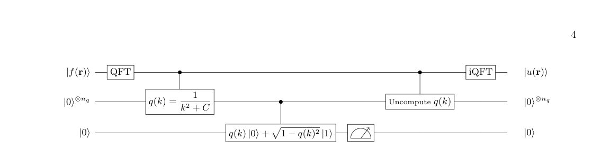
<figcaption class="paper-figure-caption"><b>Fig 1.</b> FIG. 1. Quantum implementation of the inverse operator for the screened Poisson equation in Fourier space. The Quantum Fourier Transform (QFT) maps the state to the momentum basis, where the differential operator becomes diagonal, this corresponds to the U operation in the main text . In this basis, inversion reduces to evaluating the scalar function q(k) = 1/(k2 +C), (16). This value is computed by quantum arithmetic and then encoded into an auxiliary qubit amplitude through a controlled rotation, (17), producing the state q(k) |0⟩+ p</figcaption>
</figure>
<figure class="paper-figure-card">

<figcaption class="paper-figure-caption"><b>Fig 2.</b> FIG. 2. Illustration of the (a) real and (b) imaginary parts of Eq. (20), corresponding to the principal-value and delta- function contributions, respectively. The computation is per- formed on a discretized 64 × 64 grid over a square domain of side length L = 16λ, where λ denotes the wavelength. As seen, both terms are concentrated around the dispersion sur- face k2 = ω2/c2 = 2π/λ. Here, ϵ = 3∆kω/c</figcaption>
</figure>
<figure class="paper-figure-card">
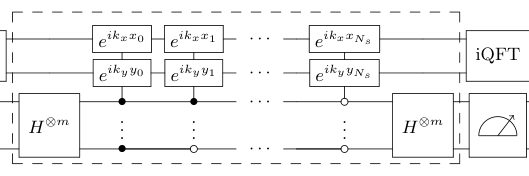
<figcaption class="paper-figure-caption"><b>Fig 3.</b> FIG. 3. Quantum circuit for the geometric quantum state preparation algorithm. The momentum registers are first initialized in the resonant state by the state-preparation procedure described in Appendix A. The source-dependent phase encoding, highlighted by the dashed box, is then implemented by controlled phase gates that apply the phases ei(kxxj+kyyj). Finally, after unpreparing the source register and post-selecting it onto |0⟩⊗m, inverse quantum Fourier transform (iQFT) is applied to the momentum registers, yielding the solution state |u(x, y)⟩.</figcaption>
</figure>
<figure class="paper-figure-card">
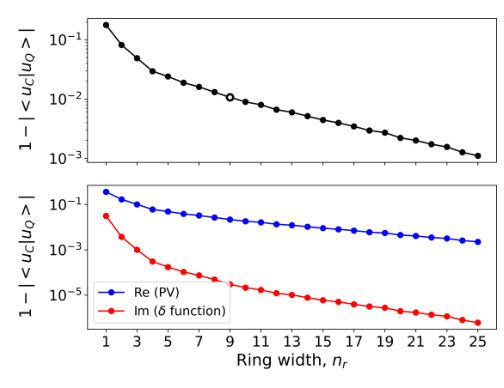
<figcaption class="paper-figure-caption"><b>Fig 4.</b> FIG. 4. Accuracy of the resonant-ring approximation. (a) Total overlap error, 1 −|⟨uC|uQ⟩|, between the normalized classical solution |uC⟩and the state |uQ⟩obtained from the resonant-ring approximation, as a function of the ring width, computed on a 64 × 64 spatial grid. The highlighted point corresponds to the simulation of Fig. 6. (b) Error in the real and imaginary parts of the solution, corresponding to the real (principal-value) and imaginary (delta-function) parts of q(k), respectively.</figcaption>
</figure>
<figure class="paper-figure-card">

<figcaption class="paper-figure-caption"><b>Fig 5.</b> FIG. 5. Minimum resonant-ring width required to achieve target approximation errors of 0.05 and 0.01 as a function of the computational domain size. The slight increase for the smallest domains is due to the coarse Fourier discretization. At higher resolution, the required ring width approaches a constant value, indicating independence from the domain size.</figcaption>
</figure>
</div>
<p><strong>Summary.</strong> This paper presents a quantum algorithm to solve wave propagation PDEs by reformulating the problem as geometric quantum state preparation. It overcomes the exponential inefficiency of standard Fourier-space methods, which fail due to singularities on the resonant manifold. The resulting technique allows for efficient computation whose success probability scales favorably with the number of sources but remains independent of the system size.</p>
<p><strong>Why it may be interesting.</strong> This work provides a concrete quantum algorithmic approach to solving fundamental physics problems (wave propagation) where standard quantum simulation techniques fail due to inherent mathematical singularities, offering a path toward practical quantum simulation.</p>
<details>
<summary>Detailed structure</summary>
<p><strong>Main problem.</strong> The paper addresses the challenge of using quantum algorithms to solve wave propagation partial differential equations (PDEs), particularly the Helmholtz equation, which suffer from singularities in the frequency domain.</p>
<p><strong>Main result.</strong> The authors propose a novel method that bypasses the exponential overhead of standard Fourier-space solvers by directly preparing quantum states supported on the resonant manifold, yielding a success probability independent of the domain size.</p>
<p><strong>Method.</strong> The core method involves recasting the PDE solution as a geometric quantum state preparation problem, utilizing quantum circuits to construct superpositions over the resonant manifold rather than inverting the full discretized operator.</p>
<p><strong>Model / system.</strong> The model is wave propagation governed by PDEs like the Helmholtz equation. The problem is discretized and analyzed in the frequency domain, leading to a linear system whose inverse is singular on the dispersion surface $k^2 = \omega^2/c^2$.</p>
<p><strong>Key observables.</strong> Success probability of state preparation ($P_{	ext{res}}$), which is shown to be independent of the computational domain size.</p>
<p><strong>Important parameters / regimes.</strong> The condition number of the discretized operator ($\kappa(A)$), the resonant manifold ($k^2 = \omega^2/c^2$), and the number of sources.</p>
<p><strong>Assumptions / limitations.</strong> The method relies on approximating the inverse operator structure and assumes the ability to perform complex arithmetic evaluation and post-selection on amplitude coefficients.</p>
<p><strong>Figures summary.</strong> Figures illustrate the quantum circuits for preparing a resonant state, including implementing a quantum analogue of the Midpoint circle algorithm and extending this to construct a finite-width resonant ring.</p>
<p><strong>Paper structure.</strong> The paper first contrasts standard Quantum Linear System Solvers (QLSS) with the limitations imposed by the condition number. It then details the failure of direct Fourier-space methods due to singularities, culminating in the proposal and derivation of the geometric quantum state preparation technique.</p>
</details>
<details>
<summary>Abstract</summary>
<p>We present a quantum algorithm for solving partial differential equations through a linear-system formulation, focusing on wave propagation problems described by the discretized Helmholtz equation in frequency domain. Although quantum linear-system solvers offer exponential compression of the system degrees of freedom, their runtime complexity is generally governed by the condition number of the discretized operator. Exploiting the analytic structure of the differential operator can provide an alternative to explicit matrix inversion, as illustrated for the screened Poisson equation through an explicit quantum circuit. For the Helmholtz equation, however, the inverse operator becomes singular on the dispersion surface $k^2=ω^2/c^2$, rendering direct Fourier-space state-preparation methods exponentially inefficient. We address this challenge by directly preparing quantum states supported on the resonant manifold and encoding source locations through Fourier phases. The resulting algorithm eliminates the exponentially large overhead associated with post-selection on the resonant manifold, yielding a success probability that depends linearly on the number of sources and is independent of the computational domain size. More generally, our approach applies to hyperbolic differential equations whose Fourier-space solutions possess singular support on dispersion manifolds, recasting their solution as a problem of geometric quantum state preparation.</p>
</details>
<p><sub><a href="#top">↑ back to top</a></sub></p>

<p><a id="paper-2609.09287"></a></p>
<h3 id="two-magnon-response-from-light-scattering-in-altermagnets"><a href="http://arxiv.org/abs/2609.09287v1">Two-magnon response from light scattering in altermagnets</a></h3>
<p><strong>Authors:</strong> Shuyi Li, Lexu Zhao, Chunjing Jia<br>
<strong>Type:</strong> theory · <strong>Category:</strong> strongly correlated electrons · <strong>PDF:</strong> <a href="https://arxiv.org/pdf/2609.09287v1">https://arxiv.org/pdf/2609.09287v1</a><br>
<strong>Analysis basis:</strong> full PDF text, analyzed in chunks</p>
<div class="figure-strip-hint">↔ Scroll figures horizontally</div>
<div class="paper-figures-scroll">
<figure class="paper-figure-card">
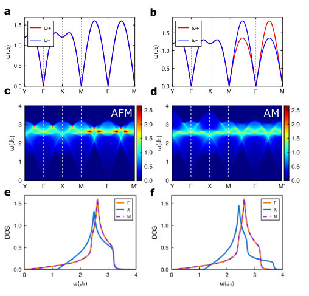
<figcaption class="paper-figure-caption"><b>Fig 1.</b> FIG. 2. Magnon band structure and two-magnon DOS within LSWT. a and b LSW magnon dispersion ω(0) ± (k) along high-symmetry paths for the conventional antiferromag- net (δJ2 = 0) and the altermagnet (δJ2 = 0.12J1), respec- tively. The red and blue lines denote the magnon branches with different chirality; they are degenerate in a, where only the blue line is visible. c and d Corresponding two-magnon DOS D(q, ω) for the conventional antiferromagnet and the altermagnet. All false-color plots use a common color scale ranging from zero to 0.8 times the global maximum intensity. e and f Constant q cuts of D(q, ω) at the Γ, M, and X points for the conventional antiferromagnet and the altermagnet;...</figcaption>
</figure>
<figure class="paper-figure-card">
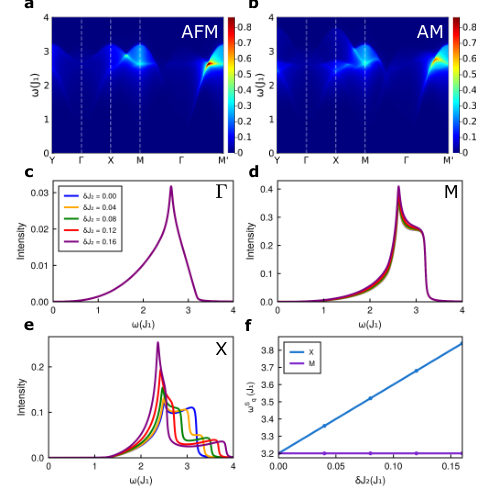
<figcaption class="paper-figure-caption"><b>Fig 2.</b> FIG. 3. Two-magnon scattering intensity in the ˆx′ˆx′</figcaption>
</figure>
<figure class="paper-figure-card">
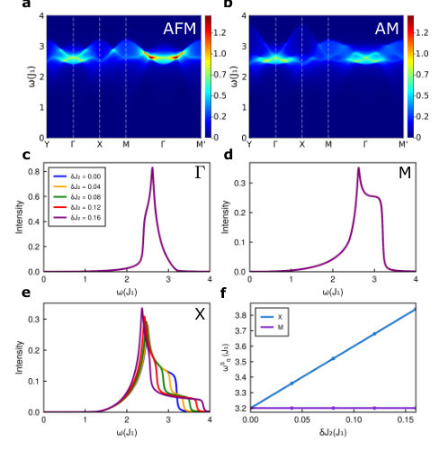
<figcaption class="paper-figure-caption"><b>Fig 3.</b> FIG. 4. Two-magnon scattering intensity in the ˆx′ˆy′</figcaption>
</figure>
<figure class="paper-figure-card">
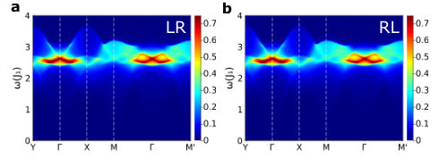
<figcaption class="paper-figure-caption"><b>Fig 4.</b> FIG. 5. Two-magnon scattering intensity in circular polarization channels within LSWT. a and b Momentum resolved intensity I(q, ω) for the LR and RL channels of the altermagnet (δJ2 = 0.12J1), respectively.</figcaption>
</figure>
<figure class="paper-figure-card">

<figcaption class="paper-figure-caption"><b>Fig 5.</b> FIG. 6. 1/S-renormalized magnon band structure and two-magnon DOS. a and b Renormalized magnon dis- persions ω±(k) along high-symmetry paths for the conven- tional antiferromagnet (δJ2 = 0) and the altermagnet (δJ2 = 0.12J1), respectively. The red and blue solid lines denote the two magnon branches, which are degenerate in a, while the dashed lines show the corresponding LSW dispersions ω(0) ± (k) for comparison. c and d Two-magnon DOS D(q, ω) con- structed from the 1/S-renormalized magnon dispersions for the conventional antiferromagnet and the altermagnet. e and f Constant-q cuts of D(q, ω) at the Γ, M, and X points for the conventional antiferromagnet and the altermagnet; the Γ and M...</figcaption>
</figure>
</div>
<p><strong>Summary.</strong> This theoretical study investigates how altermagnetism, characterized by a specific magnetic anisotropy ($\delta J_2$), alters the two-magnon light scattering spectrum. The authors demonstrate that this anisotropy causes a distinct, momentum-dependent shift in the two-magnon continuum edges and lifts degeneracies in the resonance peaks. These findings establish a powerful spectroscopic tool for identifying altermagnetic order in insulating magnets.</p>
<p><strong>Why it may be interesting.</strong> The work provides a concrete, measurable spectroscopic signature (momentum-dependent two-magnon shift) that can be sought using advanced techniques like RIXS to distinguish altermagnets from other magnetic phases.</p>
<details>
<summary>Detailed structure</summary>
<p><strong>Main problem.</strong> The primary challenge is identifying the unique spectroscopic fingerprints of altermagnetism, particularly through multi-magnon excitations.</p>
<p><strong>Main result.</strong> The altermagnetic exchange anisotropy ($\delta J_2$) causes a measurable, momentum-dependent shift in the upper edge of the two-magnon continuum and lifts degeneracies in the two-magnon resonance.</p>
<p><strong>Method.</strong> The study uses linear spin-wave theory supplemented by leading 1/S quantum corrections and calculates the two-magnon light scattering intensity.</p>
<p><strong>Model / system.</strong> The system is a two-dimensional d-wave altermagnet modeled by an effective Heisenberg Hamiltonian on a Lieb lattice, characterized by the anisotropy parameter $\delta J_2 = J_{2a} - J_{2b}$.</p>
<p><strong>Key observables.</strong> Two-magnon light scattering intensity, the energy shift of the upper continuum edge at $\mathbf{X}=(\pi,0)$, and the splitting of the two-magnon resonance at $\mathbf{K}=(\pi/2,\pi/2)$.</p>
<p><strong>Important parameters / regimes.</strong> The anisotropy parameter $|\delta J_2|$ dictates the magnitude of the spectral shifts, which are found to be linear in $|\delta J_2|$.</p>
<p><strong>Assumptions / limitations.</strong> The calculations rely on linear spin-wave theory extended with leading $1/S$ quantum corrections and treating magnon-magnon interactions within the ladder approximation.</p>
<p><strong>Figures summary.</strong> Figures illustrate the Lieb lattice structure and the momentum-dependent shifts in the two-magnon continuum edges and resonance splitting as a function of $\delta J_2$.</p>
<p><strong>Paper structure.</strong> The paper first establishes the theoretical framework using spin-wave theory to calculate the two-magnon scattering intensity. It then presents quantitative results showing the momentum-selective shifts caused by $\delta J_2$ compared to conventional antiferromagnets, followed by detailed analysis of the resonance splitting.</p>
</details>
<details>
<summary>Abstract</summary>
<p>Altermagnetism is a recently established class of magnetic order that combines fully compensated moments with momentum-dependent spin splitting, yet identifying its spectroscopic fingerprints remains an open challenge. In this work, we investigate finite-momentum two-magnon excitations in a two-dimensional $d$-wave altermagnet by calculating the two-magnon light scattering intensity in different polarization channels. Using linear spin-wave theory and further incorporating the leading $1/S$ quantum corrections, we demonstrate that the characteristic magnon splitting of altermagnets shifts the upper edge of the two-magnon continuum and the corresponding spectral features to higher energy at $\boldsymbol{X}=(π,0)$ relative to the conventional antiferromagnet, by an amount linear in the exchange anisotropy $|δJ_2|$, while leaving the response at the Brillouin-zone center unchanged. Although magnon-magnon interactions strongly redistribute spectral weight toward lower energies, the energy scale associated with the high-energy momentum-selective reconstruction remains robust. The interactions additionally generate a pronounced low-energy two-peak structure that has no counterpart within linear spin-wave theory. At $\boldsymbol{K}=(π/2,π/2)$, we show that the interacting two-magnon resonance is twofold degenerate in the conventional antiferromagnetic phase, while a finite altermagnetic exchange anisotropy lifts this degeneracy, producing two peaks whose separation is linear in $|δJ_2|$. The characteristic energy scales underlying both features are intrinsic to the two-magnon sector rather than to a specific scattering operator. These findings highlight the potential of finite-momentum two-magnon spectroscopy for identifying altermagnetic order in insulating magnets and motivate momentum-resolved resonant inelastic x-ray scattering studies of candidate altermagnetic materials.</p>
</details>
<p><sub><a href="#top">↑ back to top</a></sub></p>

<p><a id="paper-2609.09276"></a></p>
<h3 id="universal-entanglement-dynamics-of-unitary-operators"><a href="http://arxiv.org/abs/2609.09276v1">Universal Entanglement Dynamics of Unitary Operators</a></h3>
<p><strong>Authors:</strong> Ian Low, Navin McGinnis<br>
<strong>Type:</strong> theory · <strong>Category:</strong> quantum information and computing · <strong>PDF:</strong> <a href="https://arxiv.org/pdf/2609.09276v1">https://arxiv.org/pdf/2609.09276v1</a><br>
<strong>Analysis basis:</strong> full PDF text, analyzed in chunks</p>
<div class="figure-strip-hint">↔ Scroll figures horizontally</div>
<div class="paper-figures-scroll">
<figure class="paper-figure-card">

<figcaption class="paper-figure-caption"><b>Fig 1.</b> FIG. 1. (a) The two-projector unitary circle, corresponding to the boundary of Fig. 1 in Ref. [18] and parametrized by the relative phase δ. The fixed points δ = 0, π under δ →−δ are stationary by Theorem 1. (b) Entangling power of the singlet–adjoint family for N = 2, 3, 4, 5. The reflection at δ = π is a minimum for N = 2 and a maximum for N ≥3.</figcaption>
</figure>
<figure class="paper-figure-card">

<figcaption class="paper-figure-caption"><b>Fig 2.</b> FIG. 2. Entangling power near the stationary corner (δ0, δ1) = (π, 0) of the two-site spin-1 BLBQ family. (a) Entangling power in relative-phase coordinates, with the XXX (solid blue) and pure-biquadratic (dashed orange) trajectories. (b) Corresponding one-dimensional trajectories of the time-evolution: the corner is a local minimum along the XXX trajectory but a local maximum along the pure-biquadratic trajectory.</figcaption>
</figure>
</div>
<p><strong>Summary.</strong> This theoretical paper determines the locations where the entangling power of a unitary quantum gate reaches an extremum. It proves that these stationary points occur at specific 'corner' configurations defined by the relative eigenphases of the unitary. This work provides a powerful tool for classifying quantum gates based on their entanglement properties.</p>
<p><strong>Why it may be interesting.</strong> It provides a rigorous mathematical characterization of when and where entanglement generation is extremal for quantum gates, linking fundamental algebraic properties ($U^2 \propto \mathbb{I}$) to physical observables.</p>
<details>
<summary>Detailed structure</summary>
<p><strong>Main problem.</strong> The paper investigates the stationary points of the entangling power generated by a unitary operator acting on a bipartite Hilbert space.</p>
<p><strong>Main result.</strong> The entangling power is proven to be stationary at specific 'corner' points in the relative eigenphase torus, where the unitary takes the form of a generalized reflection $R = \mathbb{I} - 2Q$.</p>
<p><strong>Method.</strong> The analysis uses the spectral decomposition of the unitary operator and calculates the entangling power as a function of relative eigenphases, identifying critical points via differentiation.</p>
<p><strong>Model / system.</strong> The system is a bipartite Hilbert space acted upon by a finite-dimensional unitary operator $U$. The analysis is illustrated using two-qubit gates and two-site spin chains.</p>
<p><strong>Key observables.</strong> Entangling power ($E_p$), which is defined using the average linear entropy $\langle E(|\psi
angle) 
angle$.</p>
<p><strong>Important parameters / regimes.</strong> The relative eigenphases ($\delta_a$) of the unitary operator, and the invariants ($\alpha, eta$) derived from the spectral projectors.</p>
<p><strong>Assumptions / limitations.</strong> The analysis assumes the unitary can be parameterized by relative eigenphases, and the theorem only locates stationary points, not classifying them fully.</p>
<p><strong>Figures summary.</strong> Figures illustrate the entangling power $E_p$ near stationary corners for specific physical models, such as the two-site spin-1 BLBQ Hamiltonian, showing how the extremum type depends on the trajectory.</p>
<p><strong>Paper structure.</strong> The paper establishes the general mathematical framework by analyzing the dependence of $E_p$ on relative phases, proves the existence of stationary points at the corners, derives the form of the corner unitaries ($R_m$), and then applies these results to concrete physical examples like two-qubit gates and spin chains.</p>
</details>
<details>
<summary>Abstract</summary>
<p>The entangling power of a unitary operator acting on a bipartite Hilbert space measures the entanglement it generates from product states, averaged over the inputs. A finite-dimensional unitary has a spectral decomposition $U=\sum_{a=1}^{n}e^{iθ_a}P_a$, where $e^{iθ_a}$ are the eigenvalues, $P_a$ the corresponding eigen-projectors, and $n$ is the number of distinct eigenvalues. After removing an overall phase, the entangling power is a function on the $(n-1)$-torus of relative eigenphases at fixed spectral projectors. We prove that this function is stationary at all $2^{n-1}$ points on the torus where every relative phase is $0$ or $π$, which we define as \textit{corners}. Up to an overall phase, $U$ at each corner is a generalized reflection $R=\mathbb{I}-2Q$ satisfying $R^2=\mathbb{I}$, where $Q$ is the sum of spectral projectors whose relative phase is $π$. At the corner the entangling power is expressed in terms of seven local-unitary invariants of $Q$. A unitary gate $U$ can be realized as a corner of some projector family if and only if $U^2\propto\mathbb{I}$, a condition satisfied by many Clifford and non-Clifford gates. We illustrate the theorem with two-qubit gates, $SU(N)$ channel decompositions, and two-site spin chains, obtaining examples of minima, maxima, and saddle points. In addition, a corner that is a saddle point on the full phase torus can appear as a local maximum or minimum along different time-evolution trajectories.</p>
</details>
<p><sub><a href="#top">↑ back to top</a></sub></p>
</details>
<h2 id="secondary-cond-mat-archives">Secondary cond-mat archives</h2>
<p><em>Papers from cond-mat.mtrl-sci, mes-hall, other, soft, supr-con. These archives are de-prioritized — they appear at the end regardless of relevance score.</em></p>
<h3 id="relevant-in-secondary-archives-20">Relevant in secondary archives (20)</h3>

<p><a id="paper-2609.10389"></a></p>
<h3 id="fast-synergetic-simulation-to-study-slow-evolution-of-soliton-patterns-in-optical-resonators"><a href="http://arxiv.org/abs/2609.10389v1">Fast Synergetic Simulation to Study Slow Evolution of Soliton Patterns in Optical Resonators</a></h3>
<p><strong>Authors:</strong> Sanzida Akter, Pradyoth Shandilya, Logan Courtright, Amir Leshem, Giuseppe D'Aguanno, Omri Gat, Curtis R. Menyuk<br>
<strong>Type:</strong> theory · <strong>Category:</strong> numerical methods · <strong>PDF:</strong> <a href="https://arxiv.org/pdf/2609.10389v1">https://arxiv.org/pdf/2609.10389v1</a><br>
<strong>Analysis basis:</strong> full PDF text, analyzed in chunks
<strong>Topic relevance:</strong> 🔥 <code>methods for driven-dissipative</code> <strong>4/5</strong> · <code>Keldysh / 2PI / non-Gaussian methods</code> <strong>1/5</strong> · <code>analog quantum simulation</code> <strong>1/5</strong> · <code>correlated / nonlocal dissipation</code> <strong>1/5</strong> · <code>driven-dissipative phase transition</code> <strong>1/5</strong> · <code>non-equilibrium universality</code> <strong>1/5</strong> · <code>scars &amp; prethermalization</code> <strong>1/5</strong></p>
<div class="figure-strip-hint">↔ Scroll figures horizontally</div>
<div class="paper-figures-scroll">
<figure class="paper-figure-card">

<figcaption class="paper-figure-caption"><b>Fig 1.</b> Figure 1: (a) Schematic of a microresonator system for frequency comb generation. A microring resonator is driven by an external CW laser source to generate a train of soliton pulses or more complex patterns that form a frequency comb, as analyzed using an optical spectrum analyzer. (b) Intracavity intensity profile illustration of commonly observed optical patterns. Anomalous dispersion regime: (i) a single dissipative Kerr soliton, (ii) a soliton molecule, (iii) a perfect soliton crystal. Normal dispersion regime: (iv) a dark soliton.</figcaption>
</figure>
<figure class="paper-figure-card">

<figcaption class="paper-figure-caption"><b>Fig 2.</b> Figure 2: (a) (i) Profile of a single soliton stationary solution. (ii) The corresponding eigenvalue spectrum derived from the linearized operator. The spectrum reveals a fourfold symmetry and a single eigenvalue near zero, corresponding to translational invariance of the soliton. (b) (i) A three- soliton molecule solution and (ii) its eigenvalue profile. Here, there are three eigenvalues near zero: one represents translational invariance (similar to the single soliton), while the other two represent the slowly varying DOFs associated with the relative motion between solitons. (c) (i) An eight- soliton molecule and (ii) its eigenvalue spectrum. In this system, there are eight eigenvalues...</figcaption>
</figure>
<figure class="paper-figure-card">

<figcaption class="paper-figure-caption"><b>Fig 3.</b> Figure 3: Synergetic method algorithm flowchart</figcaption>
</figure>
<figure class="paper-figure-card">
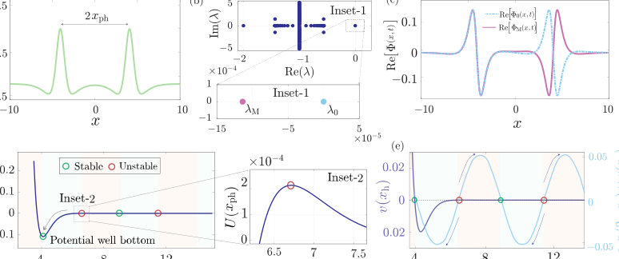
<figcaption class="paper-figure-caption"><b>Fig 4.</b> Figure 4: (a) Two-soliton molecule system where xph is half the separation distance. (b) Dynam- ical spectrum of the two-soliton molecule showing the presence of two eigenvalues near zero: λ0 corresponds to translational invariance of the soliton pair and λM is responsible for relative motion between solitons. (c) Shape of the two eigenvectors of the near-zero eigenvalues. (d) Two-soliton potential function U(xph) as a function of half the separation distance xph showing the consecutive stable and unstable equilibria. Inset-2 shows U(xph) near the potential maximum at xph = 6.7. The potential beyond this point appears nearly flat on a linear scale due to the exponential falloff of the...</figcaption>
</figure>
<figure class="paper-figure-card">

<figcaption class="paper-figure-caption"><b>Fig 5.</b> Figure 5: (a) CPU time comparison between the synergetic method and the SSFM for the two- soliton system as a function of xph(t = 0) as the solitons approach equilibrium starting at different separations. (b) Time comparison and error analysis for the synergetic method using different order explicit Runge-Kutta integrators; RK2 = second-order, RK3 = third-order, RK4 = fourth-order.</figcaption>
</figure>
</div>

<p><strong>Summary.</strong> This paper introduces the synergetic method, a novel numerical technique designed to overcome the computational stiffness encountered when simulating systems with widely separated timescales. By projecting the dynamics onto the slowly evolving modes, the method efficiently models the long-term interaction and pattern formation of solitons in optical resonators, enabling simulations on realistic laboratory timescales.</p>
<p><strong>Why it may be interesting.</strong> This work presents a powerful, generalizable numerical technique for analyzing complex, slow dynamics in nonlinear physical systems, which is highly relevant to open quantum systems and nonlinear wave physics.</p>
<details>
<summary>Detailed structure</summary>
<p><strong>Main problem.</strong> The primary challenge is numerically simulating the slow, long-term evolution of complex soliton patterns in optical resonators, where the dynamics are governed by timescales vastly different from the rapid damping timescales.</p>
<p><strong>Main result.</strong> The authors developed and applied the 'synergetic method' to simulate multi-soliton interactions, achieving speedups of $10^3$ to $10^5$ times over conventional methods and modeling dynamics on laboratory timescales.</p>
<p><strong>Method.</strong> The synergetic method, inspired by Haken's framework, eliminates rapidly damped degrees-of-freedom by analyzing the Jacobian of the evolution equation, projecting the dynamics onto the slow, dominant eigenmodes.</p>
<p><strong>Model / system.</strong> The system is based on dissipative Kerr solitons in a driven nonlinear Kerr cavity, modeled by the Lugiato-Lefever equation (a driven-damped nonlinear Schrödinger equation).</p>
<p><strong>Key observables.</strong> Inter-soliton separations ($p_1, p_2$), the potential function $U(p_1, p_2)$, and the dynamical spectrum (eigenvalues) of the linearized operator.</p>
<p><strong>Important parameters / regimes.</strong> The separation between fast (damping) and slow (pattern evolution) timescales, and the ability to simulate dynamics over laboratory timescales (e.g., seconds).</p>
<p><strong>Assumptions / limitations.</strong> The method assumes that the long-term behavior is governed by a small cluster of eigenvalues near zero, corresponding to the slow collective dynamics.</p>
<p><strong>Figures summary.</strong> Figures illustrate the system's dynamics, showing the evolution of soliton patterns (single, molecule, crystal) and mapping the potential energy landscape $U(p_1, p_2)$ that governs the slow convergence of the system.</p>
<p><strong>Paper structure.</strong> The paper establishes the physical context (solitons in microresonators), identifies the computational bottleneck (stiffness due to timescale separation), proposes the synergetic method based on Jacobian analysis, and validates it by simulating complex multi-soliton interactions and mapping their potential energy surfaces.</p>
</details>
<details>
<summary>Abstract</summary>
<p>Complex patterns in physical and biological systems often emerge through slow collective dynamics governed by a small number of key variables. In nonlinear optical resonators, dissipative Kerr solitons provide an important example, where interactions between well-separated solitons can evolve over timescales far longer than the characteristic loss and gain timescales. Direct numerical simulation of these dynamics is challenging because stiffness forces conventional methods to resolve many rapidly damped degrees-of-freedom with very small time steps. We present a numerical scheme, the synergetic method, that eliminates these rapidly damped degrees-of-freedom and retains the slowly evolving modes, enabling time steps many orders of magnitude larger than those used in conventional approaches. Applied to soliton molecules in driven Kerr cavities, the method achieves speedups of $10^3$ to $10^5$ while capturing dynamics on laboratory timescales. We use it to model the full interaction dynamics of a three-soliton molecule and the evolution of an eight-soliton molecule. The approach provides an efficient framework for studying slow pattern formation in nonlinear systems with widely separated timescales.</p>
</details>
<p><sub><a href="#top">↑ back to top</a></sub></p>

<p><a id="paper-2609.09761"></a></p>
<h3 id="morphology-and-depletion-force-based-large-scale-self-assembly-of-nanocubes-on-surface"><a href="http://arxiv.org/abs/2609.09761v1">Morphology and depletion force-based large-scale self-assembly of nanocubes on surface</a></h3>
<p><strong>Authors:</strong> Yeonhee Lee, Seungsang Cha, Yuna Kwak, Nicholas Juntunen, Grant M. Rotskoff, Jwa-Min Nam<br>
<strong>Type:</strong> both · <strong>Category:</strong> statistical mechanics · <strong>PDF:</strong> <a href="https://arxiv.org/pdf/2609.09761v1">https://arxiv.org/pdf/2609.09761v1</a><br>
<strong>Analysis basis:</strong> full PDF text, analyzed in chunks
<strong>Topic relevance:</strong> <code>analog quantum simulation</code> <strong>3/5</strong> · <code>driven-dissipative phase transition</code> <strong>2/5</strong> · <code>methods for driven-dissipative</code> <strong>2/5</strong> · <code>non-equilibrium universality</code> <strong>2/5</strong> · <code>Frenkel-Kontorova</code> <strong>1/5</strong> · <code>Keldysh / 2PI / non-Gaussian methods</code> <strong>1/5</strong> · <code>quantum measurements</code> <strong>1/5</strong> · <code>scars &amp; prethermalization</code> <strong>1/5</strong></p>
<div class="figure-strip-hint">↔ Scroll figures horizontally</div>
<div class="paper-figures-scroll">
<figure class="paper-figure-card">

<figcaption class="paper-figure-caption"><b>Fig 1.</b> Fig. 1 | Morphology-induced and depletion force-directed nanoparticle assembly on surface (MIDAS). The mixture containing Au nanocubes (AuNCs) and depletants is dropcast on the substrate and incubated for a few hours. UNP-NP denotes the interaction potential between nanoparticles while UNP-substrate denotes the interaction potential between a nanoparticle and a substrate. The stronger attractive interaction between a nanoparticle and a substrate compared to the interaction between nanoparticles induces the faster lateral growth of AuNCs, leading to the monolayer growth. In contrast, the weaker attractive interaction between a nanoparticle and a substrate leads to the relatively slower...</figcaption>
</figure>
<figure class="paper-figure-card">
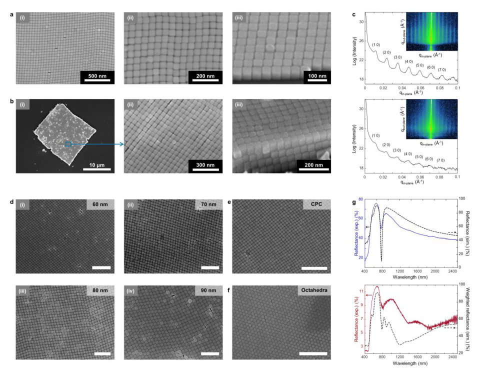
<figcaption class="paper-figure-caption"><b>Fig 2.</b> Fig. 2 | Characterization of the 2D nanocube-assembled monolayers (2D NAMs) and 3D nanocube- assembled multilayers (3D NAMs). a-b, Scanning electron microscopy (SEM) images of the assembled AuNCs on surfaces. SEM images of the 2D NAMs (a) and 3D NAMs (b), with tilted images showing 2D monolayer (a- iii) and 3D supercrystal (b-iii) formation. c, The grazing-incidence small-angle X-ray scattering (GI-SAXS) data showing crystallinity of the structures of 2D (top) and 3D (bottom) assemblies, respectively. d, 2D NAMs with varying sizes of AuNCs, 60 nm (i), 70 nm (ii), 80 nm (iii), and 90 nm (iv). e, 2D NAM formed using cetylpyridinium chloride (CPC) as the depletant. f, MIDAS-based formation of...</figcaption>
</figure>
<figure class="paper-figure-card">

<figcaption class="paper-figure-caption"><b>Fig 3.</b> Fig. 3 | In situ monitoring of the MIDAS processes of AuNCs with a bright-field microscope. a, The average growth area of the two-dimensional assembled structure as a function of time using an in situ image sequence. The nucleation and growth stages were captured by microscopic snapshots. Nanoparticles nucleate (i) on the substrate within one minute after initiating the assembly. Subsequently, the assembly process undergoes lateral growth via deposition and diffusion (ii), resulting in the complete filling of the substrate by the monolayer (iii). b, Growth pattern of the entire three-dimensional assembled structure (black), the second layer (green), and the third layer (red) over time....</figcaption>
</figure>
<figure class="paper-figure-card">
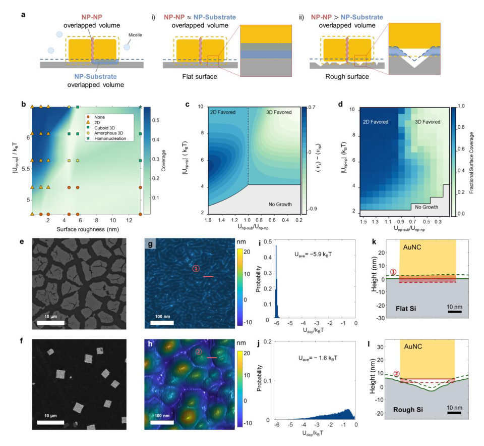
<figcaption class="paper-figure-caption"><b>Fig 4.</b> Fig. 4 | Surface roughness effect on the MIDAS. a, Schematic figure showing how the overlapped volumes are affected by surface roughness. b, A phase diagram of the nanocube assemblies depending on depletion potential strength and surface roughness. c, A phase diagram from the mean field theory across a broad parameter range. Kinetic preference is plotted in the blue-to-green scale, and thermodynamic “No Growth” area is shown in gray. d, A phase diagram of the assemblies from kinetic Monte Carlo (KMC) simulation parameter sweep. e-f, SEM images of the 2D assemblies formed on a flat-surfaced Si wafer (Sa = 0.07) (e) and 3D assemblies formed on a rough-surfaced Si wafer (Sa = 4.62) (f). g-h,...</figcaption>
</figure>
<figure class="paper-figure-card">

<figcaption class="paper-figure-caption"><b>Fig 5.</b> Fig. 5 | Kinetic Monte Carlo (KMC) simulations of surface morphology-controlled self-assembly of nanocubes. a, Schematic of the impact of neighboring nanoparticle orientation on interaction strength. b, Representative lattice-gas self-assembly modeling for flat (Fig. 4i) and rough (Fig. 4j) surface statistics. c, Orientation of nanoparticles deposited on the substrate. Similar colors are aligned, and dissimilar colors are misaligned. d, Growth kinetics from simulation. Data was tracked to 10,000 nanoparticles, with the gap between number of nanoparticles and fractional surface coverage indicating the degree of 3D stacking. e-f, Simulation trajectories for smooth (e) and rough (f) surfaces....</figcaption>
</figure>
</div>

<p><strong>Summary.</strong> This work introduces the MIDAS method for self-assembling gold nanocubes on surfaces, achieving high control over the resulting 2D or 3D superstructures. The assembly mechanism is governed by depletion forces interacting with the substrate's surface morphology. This establishes a generalizable framework for fabricating ordered nanoparticle arrays for plasmonic applications.</p>
<p><strong>Why it may be interesting.</strong> While focused on classical colloidal assembly, the underlying principles of controlled self-organization, phase transitions driven by external fields (depletion potential), and the use of computational models (KMC, lattice-gas) are highly relevant to understanding many-body dynamics in quantum systems.</p>
<details>
<summary>Detailed structure</summary>
<p><strong>Main problem.</strong> The primary challenge is achieving precise, controllable, and scalable large-scale self-assembly of nanoparticles into functional structures, overcoming limitations in current methods.</p>
<p><strong>Main result.</strong> The MIDAS method successfully enables the facile, selective formation of 2D and 3D nanoparticle arrays whose structure is dictated by the interplay between depletion forces and substrate surface roughness.</p>
<p><strong>Method.</strong> The study combines experimental assembly using gold nanocubes (AuNCs) with theoretical modeling, including lattice-gas modeling and kinetic Monte Carlo simulations.</p>
<p><strong>Model / system.</strong> The system involves AuNCs assembling on various substrates (Si, glass) driven by depletion forces generated by a depletant (BDAC micelles). The assembly mode (2D vs 3D) is controlled by the substrate's surface roughness and interaction strength.</p>
<p><strong>Key observables.</strong> 2D and 3D assembled monolayers/multilayers (AuNAMs), lattice constants, interparticle gaps, and UV-Vis reflectance spectra.</p>
<p><strong>Important parameters / regimes.</strong> Substrate surface roughness ($  ext{Sa}$), depletion potential ($U_{dep}$), and the relative strength of nanoparticle-substrate vs. nanoparticle-nanoparticle interactions.</p>
<p><strong>Assumptions / limitations.</strong> The growth mode is determined by comparing the attractive nanoparticle-substrate interactions against the nanoparticle-nanoparticle interactions, which is further refined by surface roughness control.</p>
<p><strong>Figures summary.</strong> Figures illustrate the assembly process (dropcasting) and the resulting structures, showing 2D AuNAMs on smooth Si and 3D AuNAMs on less smooth glass.</p>
<p><strong>Paper structure.</strong> The paper establishes the MIDAS method, details the role of depletion forces and substrate properties in determining the growth regime (2D vs 3D), and validates these findings using both in situ microscopy and computational modeling.</p>
</details>
<details>
<summary>Abstract</summary>
<p>Self-assembling nanoparticles is a highly efficient and facile way to form functional nano-, micro- and macrostructures. However, currently available methods lack precision and controllability in size, shape and composition, suffer from poor reproducibility and scalability, and require complex steps and expensive materials. Here, we present the uniform morphology-induced and depletion force-directed nanoparticle assembly on surface (MIDAS) method with gold nanocubes (AuNCs). Using this approach, morphology-sensitive depletion forces trigger shape-selective flocculation and assembly of the AuNCs with uniform size and shape. Importantly, the surface roughness-controlled substrate drives the large-scale formation of AuNC-assembled monolayers (2D AuNAMs) or three-dimensional AuNC-assembled multilayers (3D AuNAMs) in a highly specific manner without any complex ligand modification or preparation steps. Lattice-gas modeling and kinetic Monte Carlo simulations show the depletion force is the key parameter determining supercrystal morphology and corroborate the experimental findings. This work establishes a generalizable nanoparticle assembly mechanism and demonstrates the broad applicability of the MIDAS strategy for scalable fabrication and patterning of 2D and 3D nanoparticle architectures.</p>
</details>
<p><sub><a href="#top">↑ back to top</a></sub></p>

<p><a id="paper-2609.09422"></a></p>
<h3 id="quantum-phase-transitions-and-fractional-quantized-anomalous-hall-insulators-in-rhombohedral-graphene"><a href="http://arxiv.org/abs/2609.09422v1">Quantum Phase Transitions and Fractional Quantized Anomalous Hall Insulators in Rhombohedral Graphene</a></h3>
<p><strong>Authors:</strong> Zach Hadjri, Xinlei Yue, Tonghang Han, Yuxuan Yao, Zhengguang Lu, Shenyong Ye, Junseok Seo, Jixiang Yang, Kenji Watanabe, Takashi Taniguchi, Liang Fu, Ady Stern, Long Ju<br>
<strong>Type:</strong> both · <strong>Category:</strong> strongly correlated electrons · <strong>PDF:</strong> <a href="https://arxiv.org/pdf/2609.09422v1">https://arxiv.org/pdf/2609.09422v1</a><br>
<strong>Analysis basis:</strong> full PDF text, analyzed in chunks
<strong>Topic relevance:</strong> <code>analog quantum simulation</code> <strong>3/5</strong> · <code>driven-dissipative phase transition</code> <strong>2/5</strong> · <code>non-equilibrium universality</code> <strong>2/5</strong> · <code>Keldysh / 2PI / non-Gaussian methods</code> <strong>1/5</strong> · <code>methods for driven-dissipative</code> <strong>1/5</strong></p>
<div class="figure-strip-hint">↔ Scroll figures horizontally</div>
<div class="paper-figures-scroll">
<figure class="paper-figure-card">

<figcaption class="paper-figure-caption"><b>Fig 1.</b> Fig. 1. Resistivity semi-circles of FL-FCI quantum phase transitions in a pentalayer rhombohedral graphene/hBN moiré superlattice. a, Optical micrograph of the device reported on in this paper. The probe configuration used to measure 𝑅𝑥𝑥 and 𝑅𝑥𝑦 is shown. b, Color map of longitudinal resistance 𝑅𝑥𝑥 as a function of moiré filling factor 𝜈 and D. Vertical stripes corresponding to FCIs can be seen in the intermediate range of D, above (below) which is the Fermi liquid state (the correlated insulating (CI) state). The thermal activation data in Fig. 4 were taken along the dotted-dashed line. c-f, Longitudinal resistivity 𝜌𝑥𝑥 versus Hall resistivity 𝜌𝑥𝑦 plots, corresponding to the dashed lines...</figcaption>
</figure>
<figure class="paper-figure-card">
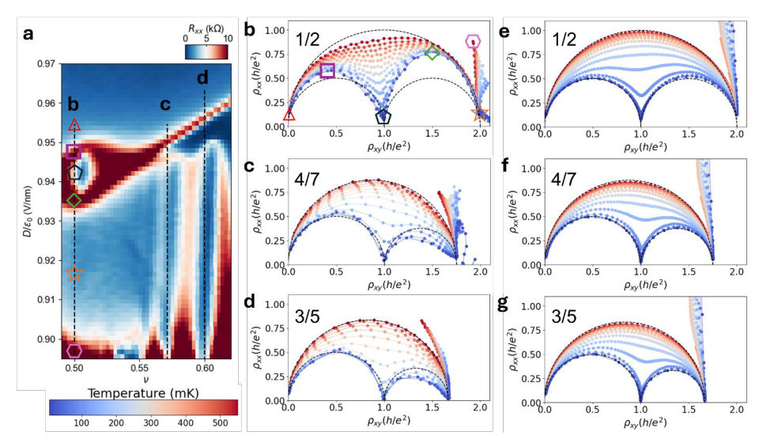
<figcaption class="paper-figure-caption"><b>Fig 2.</b> Fig. 2. Resistivity semi-circles of the FL-EQAH-FCI/CFL phase transitions. a, 𝑅𝑥𝑥 colormap showing filling factors at and above 𝜈= 1/2, and dashed lines trace the D-field-driven quantum phase transitions at 𝜈= 1/2, 4/7, 3/5. The red triangle represents a Fermi liquid state, the black pentagon the EQAH state with Chern number C = 1, the orange star represents the CFL state with 𝜌𝑥𝑦≈2ℎ/𝑒2. The purple square represents the intermediate point between the FL and EQAH state, and the green diamond represents the intermediate point between EQAH and CFL. b-d, Resistivity plots for mixing chamber temperatures of 7 to 550 mK taken along the dashed lines in</figcaption>
</figure>
<figure class="paper-figure-card">
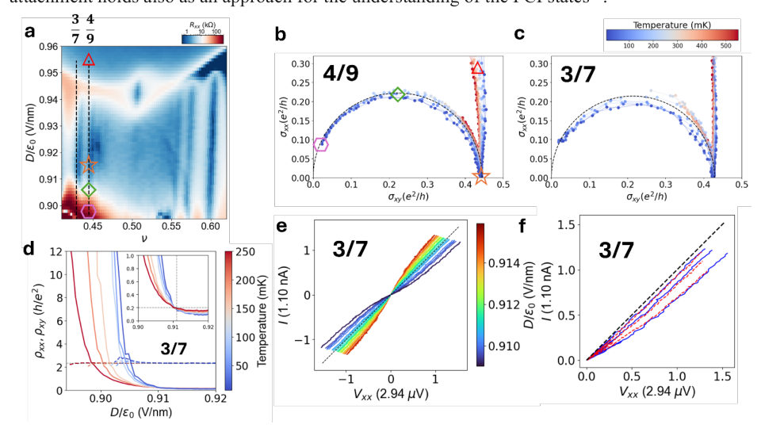
<figcaption class="paper-figure-caption"><b>Fig 3.</b> Fig. 3. Conductivity semi-circles and fractional quantized anomalous Hall insulators. a, 𝑅𝑥𝑥 color map, with black dashed lines tracing the D-field-driven quantum phase transitions at 𝜈 3/7 and 4/9. At 𝜈 4/9. The red triangle, orange star, pink hexagon, and green diamond represent a Fermi liquid, the FCI state, the insulating state, and the intermediate state, respectively. b,c, Plots of 𝜎𝑥𝑥 vs. 𝜎𝑥𝑦 at varying temperatures for 4/9 and 3/7 taken along dashed lines in a, respectively. The transitions from the FCI to the insulator agree well with the semi-circles, while the data corresponding to the FCI-FL transition develops into vertical lines with diverging conductivity. d, 𝜌𝑥𝑥 (solid...</figcaption>
</figure>
<figure class="paper-figure-card">
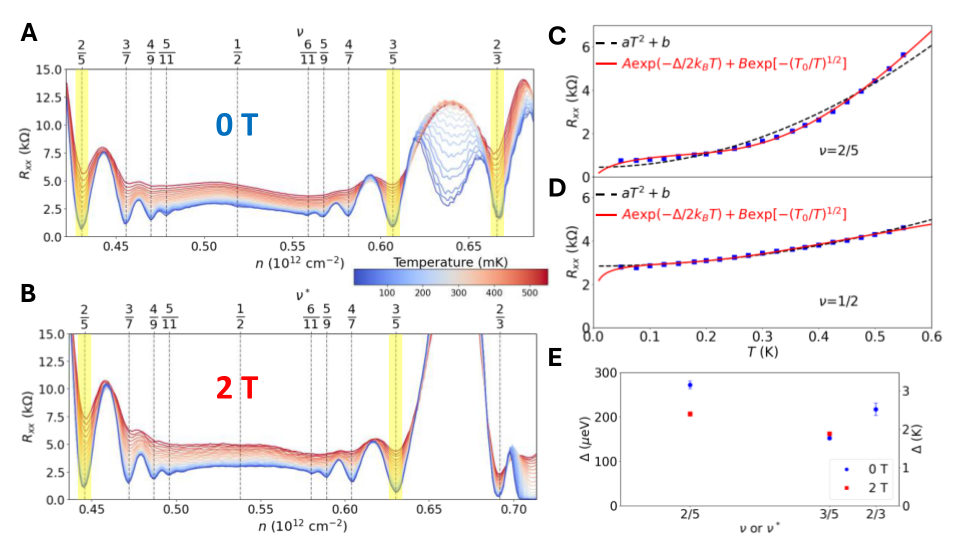
<figcaption class="paper-figure-caption"><b>Fig 4.</b> Fig. 4. Comparison with thermal activation model and transport gaps of FCI states. a,b, Temperature dependence of 𝑅𝑥𝑥 vs electron density along the dashed-dotted line in Fig. 1a, taken at 0 T and 2 T out-of-plane magnetic fields. The upper x-axis is the moiré filling factor. b, Similar to a, but at 2 T, and along a different trajectory in (𝑛, 𝐷) space (see Extended Data Fig. 5). The data are qualitatively similar at these two magnetic fields, except for the suppression of the EQAH</figcaption>
</figure>
</div>

<p><strong>Summary.</strong> This work reports on the quantum phase transitions in rhombohedral graphene moiré superlattices, identifying the Fractional Quantized Anomalous Hall Insulator (FQAHI) phase. By analyzing transport measurements, the authors show that phase boundaries follow predictable semi-circle relations, and by fitting temperature dependence, they estimate the energy gaps in these exotic correlated insulating states.</p>
<p><strong>Why it may be interesting.</strong> The study provides experimental evidence for highly correlated insulating states (FCIs/FQAHI) in a tunable 2D platform, which is crucial for understanding topological phases relevant to quantum simulation and emergent quantum phenomena.</p>
<details>
<summary>Detailed structure</summary>
<p><strong>Main problem.</strong> The paper investigates quantum phase transitions and characterizes novel insulating states, specifically the Fractional Quantized Anomalous Hall Insulator (FQAHI), in rhombohedral graphene moiré superlattices.</p>
<p><strong>Main result.</strong> Phase transitions between various correlated states (FL, FCI, CI) are described by semi-circle relations in resistivity/conductivity space, confirming the existence of a new FQAHI phase.</p>
<p><strong>Method.</strong> The study combines systematic transport measurements (resistivity/conductivity) with theoretical modeling, employing the effective medium approximation and fitting temperature-dependent data to thermal activation models.</p>
<p><strong>Model / system.</strong> The physical system is rhombohedral pentalayer graphene/hBN moiré superlattices, which exhibit tunable electronic properties via an external gate-displacement field (D). The analysis covers transitions between Composite Fermi liquid, Fermi liquid, and Fractional Chern Insulator states.</p>
<p><strong>Key observables.</strong> Longitudinal and transverse resistivities/conductivities ($
ho_{xx}, 
ho_{xy}$), which exhibit semi-circle trajectories; temperature-dependent resistance ($R_{xx}$); and estimated transport gap sizes.</p>
<p><strong>Important parameters / regimes.</strong> Gate-displacement field ($D$), filling factor ($
u$), and temperature ($T$).</p>
<p><strong>Assumptions / limitations.</strong> The semi-circle law is assumed to hold for two-phase coexistence, and the analysis relies on fitting data to specific functional forms (e.g., thermal activation or $T^2$ dependence).</p>
<p><strong>Figures summary.</strong> Figures illustrate semi-circle transitions in $(
ho_{xx}, 
ho_{xy})$ and $(\sigma_{xx}, \sigma_{xy})$ planes for different filling factors, alongside Arrhenius plots comparing thermal activation fits to metallic temperature dependencies.</p>
<p><strong>Paper structure.</strong> The paper systematically analyzes transport measurements across different filling factors, first establishing the semi-circle law for phase transitions, then detailing the FCI-CI transition suggesting the FQAHI, and finally using temperature-dependent fits to estimate transport gaps.</p>
</details>
<details>
<summary>Abstract</summary>
<p>Fractional quantum anomalous Hall effect (FQAHE) has been discovered in twisted MoTe$_2$ and rhombohedral graphene/hBN moiré superlattices. Such van der Waals heterostructures feature a tuning knob of gate displacement field $D$, which is absent from the conventional fractional quantum Hall systems in two-dimensional electron gases. $D$ plays a critical role in engineering FQAHE and other emergent quantum states and provides an exciting new opportunity to explore their quantum phase transitions. However, the microscopic details of such transitions and temperature-dependent transport have remained mostly elusive. Here we report systematic resistance measurements in rhombohedral pentalayer graphene/hBN moiré superlattices. We found that the displacement field-driven phase transitions between Composite Fermi liquid, Fermi liquid, Fractional Chern insulators, and insulating states are described by semi-circle relations of the longitudinal and transverse resistivities (or conductivities), largely unexplored in the fractional quantum Hall systems. This agrees with a spatially separated two-phase picture for the phase transitions and further indicates a new insulator phase--fractional quantized anomalous Hall insulator. By comparing the temperature-dependence of longitudinal resistance with the thermal activation model, we estimated the transport gap sizes in three fractional Chern insulator states. Our work shed light on the quantum and temperature evolutions of fractional Chern insulator states--providing necessary background for anyon-braiding and gate-defined junctions in rhombohedral graphene.</p>
</details>
<p><sub><a href="#top">↑ back to top</a></sub></p>

<p><a id="paper-2609.09922"></a></p>
<h3 id="apparent-zero-momentum-signals-from-magnon-magnon-interference-in-near-field-spin-wave-imaging"><a href="http://arxiv.org/abs/2609.09922v1">Apparent Zero-Momentum Signals from Magnon--Magnon Interference in Near-Field Spin-Wave Imaging</a></h3>
<p><strong>Authors:</strong> Julien Berthomier, Romain Lebrun, Vincent Cros, Jamal Ben Youssef, Karim Bouzehouane, Abdelmadjid Anane<br>
<strong>Type:</strong> both · <strong>Category:</strong> other · <strong>PDF:</strong> <a href="https://arxiv.org/pdf/2609.09922v1">https://arxiv.org/pdf/2609.09922v1</a><br>
<strong>Analysis basis:</strong> full PDF text, analyzed in chunks
<strong>Topic relevance:</strong> <code>interference shaping light</code> <strong>3/5</strong> · <code>quantum measurements</code> <strong>2/5</strong></p>
<div class="figure-strip-hint">↔ Scroll figures horizontally</div>
<div class="paper-figures-scroll">
<figure class="paper-figure-card">

<figcaption class="paper-figure-caption"><b>Fig 1.</b> FIG. 1. Effect of NV-sample distance on phase- coherent spin-wave imaging. (a) Schematic of the experi- mental setup: a single NV center at the end of an AFM probe (QZabre) scans above a 140-nm-thick YIG film. A stripline antenna excites primarily Damon–Eshbach (DE) modes with the bias field µ0Hext = 15.9 mT applied parallel to the trans- ducer. Propagating spin waves scatter off defects, generating characteristic caustic beams. (b) Experimental NV contrast at an NV–sample distance d = 200 nm, revealing the wave- fronts of the coherently excited DE modes. (c) Corresponding near-field diffraction simulation accounting for the interfer- ence between the antenna field and the spin-wave stray...</figcaption>
</figure>
<figure class="paper-figure-card">
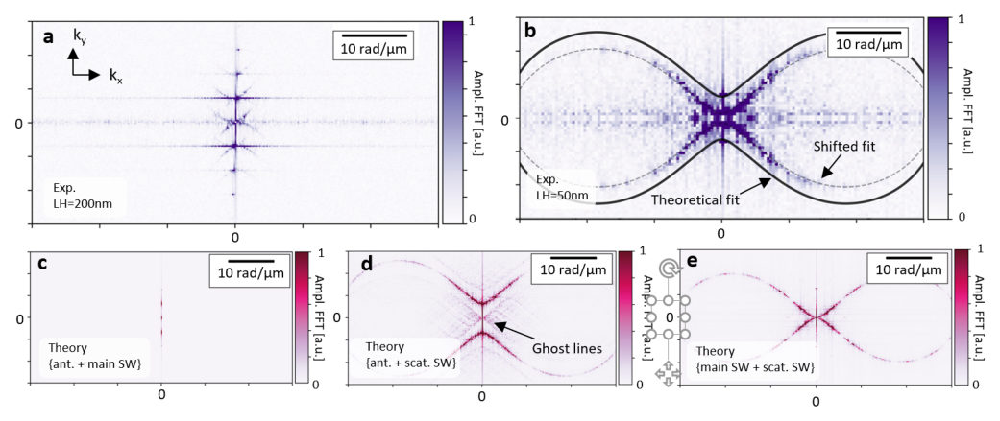
<figcaption class="paper-figure-caption"><b>Fig 2.</b> FIG. 2. Probing the reciprocal space of spin-wave interference at varying lift heights. (a) Fast Fourier Transform (FFT) of the experimental image at d = 200 nm [Fig. 1(b)]. The primary DE modes manifest as distinct reciprocal-space peaks; additional harmonics arise from the nonlinearity of the contrast with respect to microwave power and the spatial anharmonicity of the non-propagating microwave excitation field at the NV position. (b) FFT of the experimental image at d = 50 nm [Fig. 1(d)], where a butterfly-shaped spectral distribution emerges with prominent components near k ≈0. The expected analytical isofrequency contour is overlaid as a solid black line. The dashed curve corresponds...</figcaption>
</figure>
<figure class="paper-figure-card">

<figcaption class="paper-figure-caption"><b>Fig 3.</b> FIG. 3. Spin-wave scattering from intrinsic defects and transducer corrugations. (a) Experimental mag- netic image revealing caustic beams (dashed lines) originat- ing from scattering centers at the YIG surface (arrows). At µ0H = 17.1 mT and fNV = 2390 MHz, the excitation fre- quency intersects the DE branch, leading to high-efficiency propagation. The contrast [PL/PL0]∗denotes the signal after median-column subtraction to enhance wavefront visibility. (b-inset) Calculated dispersion relation at µ0H = 33.3 mT; at fNV = 1937 MHz, the frequency lies below the DE mani- fold but remains resonant with the backward-volume branch. (b) Experimental NV images at fNV = 1937 MHz. While primary DE...</figcaption>
</figure>
<figure class="paper-figure-card">
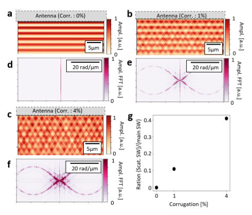
<figcaption class="paper-figure-caption"><b>Fig 4.</b> FIG. 4. Impact of transducer geometry on spin-wave scattering efficiency. (a)–(c) Real-space NFD simulations of spin-wave propagation excited by antennas with varying edge profiles at a fixed lift height: (a) ideal (rectilinear) edge, where only the primary DE mode is excited, (b) 1% corruga- tion width (100 nm), and (c) 4% corrugations. Insets provide a magnified view of the lithographic transducer definition. (d)–(f) Corresponding spectral distributions in k-space ob- tained via FFT of the real-space profiles. The emergence of high-momentum spectral weight correlates with the presence of edge roughness. (g) Relative amplitude ratio of a represen- tative scattered mode [kscat = (1, 2)...</figcaption>
</figure>
</div>

<p><strong>Summary.</strong> This work demonstrates that near-field imaging of spin waves does not provide a direct map of the material's eigenmodes. By analyzing the interference between different spin-wave components, the authors show that apparent zero-momentum signals are artifacts of magnon-magnon interference, providing a necessary framework for interpreting complex wave measurements in magnonics.</p>
<p><strong>Why it may be interesting.</strong> The concept of interpreting measured fields as interferometric spectra rather than intrinsic mode spectra is crucial for understanding wave phenomena in nanoscale devices, which has parallels in quantum optics and condensed matter wave physics.</p>
<details>
<summary>Detailed structure</summary>
<p><strong>Main problem.</strong> The standard interpretation that spatially resolved measurements of coherent waves directly map the underlying eigenmode spectrum fails in near-field imaging of multimode spin-wave transport.</p>
<p><strong>Main result.</strong> The observed low-momentum signals are not due to true propagating modes but arise from coherent magnon-magnon interference between directly excited and scattered spin waves.</p>
<p><strong>Method.</strong> The study combines scanning nitrogen-vacancy (NV) magnetometry experiments with advanced theoretical modeling, including the Near-Field Diffraction (NFD) framework and Biot-Savart law calculations.</p>
<p><strong>Model / system.</strong> The system is spin-wave transport in a yttrium iron garnet (YIG) film, probed by a local, phase-coherent microwave-field sensor (NV magnetometry). The signal is modeled as the superposition of multiple interfering magnetic fields.</p>
<p><strong>Key observables.</strong> The measured signal's spatial Fourier components, particularly the anomalous components appearing near zero wave vector ($\mathbf{k} \approx 0$).</p>
<p><strong>Important parameters / regimes.</strong> Probe-sample distance ($d$), excitation wave vectors ($\mathbf{k}_{	ext{exc}}$) and scattering wave vectors ($\mathbf{k}_{	ext{scat}}$), and the difference wave vector $\Delta\mathbf{k} = \mathbf{k}_{	ext{exc}} - \mathbf{k}_{	ext{scat}}$.</p>
<p><strong>Assumptions / limitations.</strong> The analysis assumes the measured signal is proportional to the local microwave power and utilizes the quasi-magnetostatic approximation for field calculations.</p>
<p><strong>Figures summary.</strong> Figures show experimental contrast at varying probe distances, FFTs revealing anomalous low-k components, and simulations confirming these components originate from the cross-term interference.</p>
<p><strong>Paper structure.</strong> The paper first establishes the failure of the direct eigenmode mapping assumption, then models the total field as a sum of interfering components, and finally uses simulations and experiments to isolate the interference term as the source of apparent zero-momentum signals.</p>
</details>
<details>
<summary>Abstract</summary>
<p>Spatially resolved measurements of coherent waves are commonly read as direct maps of the underlying eigenmode spectrum. We show that this interpretation fails in near-field imaging of multimode spin-wave transport. Scanning nitrogen-vacancy magnetometry of yttrium iron garnet reveals pronounced apparent low-wave-vector signals at frequencies for which no propagating spin-wave mode exists. By tuning the probe-sample distance and modeling the anisotropic near-field response, we identify their origin as coherent mixing between directly excited Damon-Eshbach waves and defect- or transducer-scattered spin waves: the measured signal acquires spatial Fourier components at the difference wave vector $\mathbf{k}_{\mathrm{exc}}-\mathbf{k}_{\mathrm{scat}}$, which can vanish even though both constituent waves carry finite momentum. These results establish that near-field spectra of coherent excitations are interferometric field spectra rather than eigenmode maps, providing both a caution and a framework for identifying scattering processes in nanoscale magnonic devices.</p>
</details>
<p><sub><a href="#top">↑ back to top</a></sub></p>

<p><a id="paper-2609.09870"></a></p>
<h3 id="photo-induced-wavelength-tuning-of-telecom-band-quantum-dot-nanowires-embedded-in-a-phase-change-material"><a href="http://arxiv.org/abs/2609.09870v1">Photo-induced Wavelength-tuning of Telecom-band Quantum Dot Nanowires Embedded in a Phase Change Material</a></h3>
<p><strong>Authors:</strong> Evangelos Sotiropoulos, Philippe Regreny, Matthieu Bugnet, Nicholas P. Blanchard, Sébastien Cueff, José Penuelas, Nicolas Chauvin<br>
<strong>Type:</strong> experiment · <strong>Category:</strong> other · <strong>PDF:</strong> <a href="https://arxiv.org/pdf/2609.09870v1">https://arxiv.org/pdf/2609.09870v1</a><br>
<strong>Analysis basis:</strong> full PDF text, analyzed in chunks
<strong>Topic relevance:</strong> <code>quantum optics experiment</code> <strong>3/5</strong> · <code>interference shaping light</code> <strong>1/5</strong> · <code>quantum measurements</code> <strong>1/5</strong></p>
<div class="figure-strip-hint">↔ Scroll figures horizontally</div>
<div class="paper-figures-scroll">
<figure class="paper-figure-card">
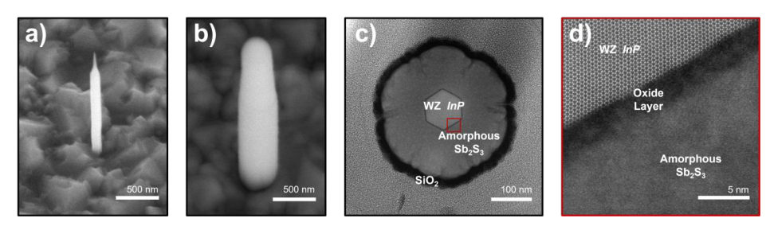
<figcaption class="paper-figure-caption"><b>Fig 1.</b> Figure 1. (a) SEM image (30° tilted) of as-grown MBE InP/InAs/InP core/GaInP shell nanowires. (b) SEM image (30° tilted) of the nanowires after Sb₂S₃ and SiO₂ deposition. (c) Low-magnification cross-sectional HAADF-STEM image of a representative nanowire. (d) High-magnification cross-sectional HAADF-STEM image of the InP core/Sb2S3 interface.</figcaption>
</figure>
<figure class="paper-figure-card">
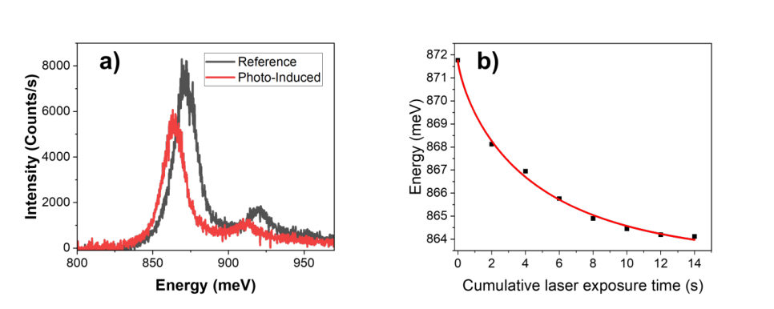
<figcaption class="paper-figure-caption"><b>Fig 2.</b> Figure 2. (a) Room Temperature μ-PL spectra of a representative QD-NW before and after the 671 nm laser, showing a persistent 7.7 meV redshift of the ground-state emission. (b) Ground-state emission energy of the same QD-NW as a function of cumulative 671 nm laser exposure time, recorded under repeated 2 s irradiation steps. The solid line corresponds to a stretched-exponential fit of the saturating redshift dynamics.</figcaption>
</figure>
<figure class="paper-figure-card">
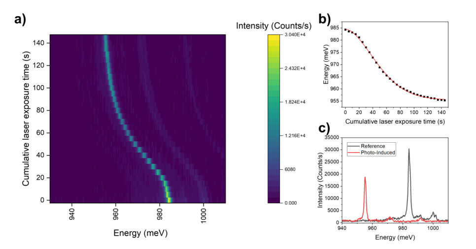
<figcaption class="paper-figure-caption"><b>Fig 3.</b> Figure 3. (a) μ-PL intensity map of a representative InAs/InP NW QD recorded at 12 K during stepwise laser exposure of the amorphous Sb₂S₃ shell. The sample was exposed</figcaption>
</figure>
<figure class="paper-figure-card">
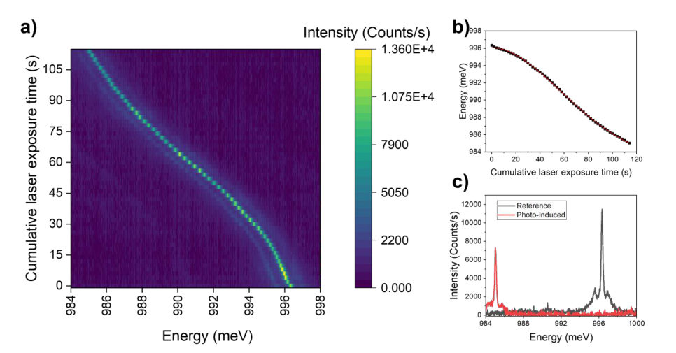
<figcaption class="paper-figure-caption"><b>Fig 4.</b> Figure 4. (a) μ-PL intensity map of a representative InAs/InP NW QD with a thicker InP core, recorded at 12 K during stepwise laser exposure of the amorphous Sb₂S₃ shell. The sample was exposed to repeated 2 s irradiation steps using a 671 nm CW laser with a power of 0.35 mW and a μ-PL spectrum was recorded after each step. (b) Extracted emission peak energy as a function of cumulative irradiation time, together with a stretched-exponential fit describing the redshift dynamics. (c) Initial and final μ-PL spectra recorded before and after irradiation, showing the total redshift associated with the local photo-induced process.</figcaption>
</figure>
<figure class="paper-figure-card">

<figcaption class="paper-figure-caption"><b>Fig 5.</b> Figure 5. (a) Low temperature PL of NW samples. (b) Reciprocal-space map around the Wz InP 1 ˉ 105 reflection for the as-deposited sample.</figcaption>
</figure>
</div>

<p><strong>Summary.</strong> This research presents a novel, contact-free method to tune the emission wavelength of quantum dots embedded in nanowires by utilizing a photo-induced strain relaxation mechanism in an overlying amorphous shell. By controlling the local strain environment, the authors achieve significant, persistent spectral shifts, enabling the creation of spectrally matched emitters for quantum photonic applications.</p>
<p><strong>Why it may be interesting.</strong> This work is highly relevant to quantum optics and open quantum systems because it presents a robust, external method to engineer the energy levels (emission wavelength) of solid-state emitters post-fabrication, which is crucial for building integrated quantum circuits.</p>
<details>
<summary>Detailed structure</summary>
<p><strong>Main problem.</strong> The primary challenge addressed is achieving spectrally matched emitters for scalable quantum-photonic technologies, due to inherent emitter-to-emitter variations in quantum dot emission energies.</p>
<p><strong>Main result.</strong> The authors demonstrate a contact-free, post-growth spectral tuning of quantum dot emission by inducing a photo-driven relaxation of strain within the surrounding amorphous chalcogenide shell.</p>
<p><strong>Method.</strong> The tuning is achieved by exposing the InAs quantum dot nanowires, coated with amorphous Sb2S3, to specific wavelengths of laser light, which modifies the local strain environment.</p>
<p><strong>Model / system.</strong> The system consists of InAs quantum dots embedded in InP nanowires, which are coated with an amorphous Sb2S3 shell. The tuning mechanism is attributed to the photo-induced transformation of the amorphous shell, leading to progressive strain relaxation on the InP core.</p>
<p><strong>Key observables.</strong> Spectral redshift of the QD emission energy ($\sim 7 	ext{ meV}$ at RT; $\sim 28 	ext{ meV}$ at 12 K); lattice parameters and strain components derived from XRD; optical contrast changes upon laser irradiation.</p>
<p><strong>Important parameters / regimes.</strong> Temperature (Room Temperature vs. 12 K); Laser wavelengths (532 nm vs. 671 nm); Strain magnitude ($ ext{meV}$ shifts).</p>
<p><strong>Assumptions / limitations.</strong> The observed redshift is primarily due to strain relaxation caused by the photo-induced structural change in the amorphous shell, rather than simple heating or crystallization.</p>
<p><strong>Figures summary.</strong> Figures show $\mu$-PL spectra demonstrating persistent redshifts after laser exposure, and STEM/XRD data are used to quantify the strain changes induced by the shell deposition and subsequent photo-treatment.</p>
<p><strong>Paper structure.</strong> The paper progresses from establishing the need for spectral matching to detailing the photo-induced tuning effect, quantifying the redshift at different temperatures, and finally elucidating the mechanism by comparing different laser wavelengths and observing structural changes.</p>
</details>
<details>
<summary>Abstract</summary>
<p>Scalable quantum-photonic technologies require spatially separated emitters to emit at the same wavelength, yet epitaxially grown quantum dots naturally exhibit emitter-to-emitter variations in their emission energies. Here, we demonstrate a contact-free post-growth tuning approach for InAs quantum dots embedded in InP nanowires using the photo-induced transformation of an amorphous Sb2S3 shell. This photoinduced effect leads to a progressive relaxation of the strain imposed on the InP core, enabling controlled spectral tuning of the quantum-dot emission. The effect is observed both at room temperature and under cryogenic conditions for quantum dots emitting in the O-band of the telecommunications spectrum. Strain-induced redshifts of approximately 7 meV at room temperature and 28 meV under cryogenic conditions are observed, respectively. The use of an amorphous chalcogenide shell therefore provides a route to achieve local wavelength tuning at the single quantum-dot-in-a-nanowire level after growth. This approach could enable spectrally matched emitters for scalable quantum-photonic architectures.</p>
</details>
<p><sub><a href="#top">↑ back to top</a></sub></p>

<p><a id="paper-2609.09611"></a></p>
<h3 id="twist-and-strain-identification-in-moire-heterostructures"><a href="http://arxiv.org/abs/2609.09611v1">Twist and strain identification in moiré heterostructures</a></h3>
<p><strong>Authors:</strong> Zhen Zhan, Federico Escudero, Dong Wang, Yiwen Liu, Ambikesh Gupta, Pierre A. Pantaleón, Francisco Guinea<br>
<strong>Type:</strong> theory · <strong>Category:</strong> strongly correlated electrons · <strong>PDF:</strong> <a href="https://arxiv.org/pdf/2609.09611v1">https://arxiv.org/pdf/2609.09611v1</a><br>
<strong>Analysis basis:</strong> full PDF text, analyzed in chunks
<strong>Topic relevance:</strong> <code>analog quantum simulation</code> <strong>3/5</strong> · <code>Frenkel-Kontorova</code> <strong>1/5</strong> · <code>Keldysh / 2PI / non-Gaussian methods</code> <strong>1/5</strong></p>
<div class="figure-strip-hint">↔ Scroll figures horizontally</div>
<div class="paper-figures-scroll">
<figure class="paper-figure-card">
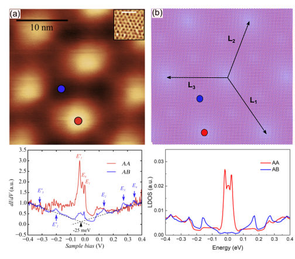
<figcaption class="paper-figure-caption"><b>Fig 1.</b> FIG. 1. Twist and strain identification of STM pattern with atomic resolution. (a) STM image (top panel) and dI/dV spectroscopy (bottom panel) measured at the spots marked with colored dots of TSBG moir´e pattern. Resonances at higher energy in AB regions are labeled with blue arrows. Inset: honeycomb lattice of the carbon atoms in the top layer. The scale bar in the inset is 1 nm. The results are adapted from Ref. [40]. (b) The generated moir´e pattern (top panel) using the twist and strain extracted from the experiment, and the calculated TB LDOS lines (bottom panel) at the AA (red dot) and AB (blue dot) regions. L1, L2 and L3 are the moir´e wavelengths.</figcaption>
</figure>
<figure class="paper-figure-card">

<figcaption class="paper-figure-caption"><b>Fig 2.</b> FIG. 2. Twist and strain solutions of sample two with moir´e resolution. (a) The definitions of the lattice vectors and moir´e vectors used to extract the twist and strain. We introduce the unknown orientation φ to the moir´e vectors and fix the graphene lattice vectors ai. This definition is equivalent to the way of introducing φ to ai and fixing the moir´e vectors. (b) All solutions of twist and strain for sample two with L1 = 10.56 nm, L2 = 10.65 nm, and L3 = 11.97 nm. (c) The strain components εxx+εyy (left black) and (TrE)2 /det E (right red) change with the global rotation φ. The traceless strain tensor (horizontal black dotted line) implies a pure shear solution (yellow dot). The...</figcaption>
</figure>
<figure class="paper-figure-card">

<figcaption class="paper-figure-caption"><b>Fig 3.</b> FIG. 3. Three solutions of sample two. The commensurate moir´e pattern (top panel), band structure and LDOS (bottom panel) of the (a) shear strain case, (b) uniaxial strain case, (c) biaxial-dominant strain case. The three solutions are illustrated with yellow symbols in Fig. 2. In the moir´e patterns, L1, L2 and L3 are moir´e wavelengths, which have a global rotation of φ relative to the x axis. The LDOS lines with red and blue colors are the properties calculated in the AA and AB regions. The electronic properties are calculated by the TB method with the commensurate details in Table I.</figcaption>
</figure>
<figure class="paper-figure-card">

<figcaption class="paper-figure-caption"><b>Fig 4.</b> FIG. 4. Twist and strain solutions of sample three with equal moir´e lengths. (a) Plot of the function f (ξ), which determines the moir´e length LM for the strained triangular moir´e patterns. The green vertical line at ξ = 0 corresponds to the minimum (traceless) shear strain case, at which f takes its maximum value. The magenta line corresponds to the uniaxial strain solution. (b) Evolution of the moir´e length LM (θ, ξ), and (c) elastic energy, as a function of the twist angle θ and ξ. The dashed contour curves correspond to constant moir´e lengths LM from 11 to 18 nm. The horizontal lines correspond to the shear and uniaxial solutions.</figcaption>
</figure>
<figure class="paper-figure-card">
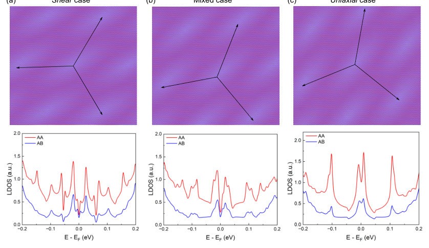
<figcaption class="paper-figure-caption"><b>Fig 5.</b> FIG. 5. Three solutions of sample three with equal moir´e length LM ≈13 nm. The commensurate moir´e pattern (top panels) and the LDOS for (a) the shear-strain case, (b) the mixed-strain case, and (c) the uniaxial-strain case. In the commensurate moir´e patterns, the three moir´e lengths are not equal due to the aligned assumption used to find the closest commensurate solutions in Sec. II C. The LDOS lines with red and blue colors are the properties calculated in the AA and AB regions. The electronic properties are calculated by the TB method with the commensurate solutions in Table II.</figcaption>
</figure>
</div>

<p><strong>Summary.</strong> This work presents a comprehensive theoretical framework to precisely determine the twist and strain configurations in moiré heterostructures. It addresses the non-uniqueness of the solution by incorporating physical constraints, notably the minimum elastic energy and electronic structure. This methodology is crucial for accurately modeling and predicting the correlated electronic phases in twisted 2D materials.</p>
<p><strong>Why it may be interesting.</strong> The strong dependence of electronic states (e.g., flat bands, correlated phases) on strain and twist makes this highly relevant to understanding emergent quantum phenomena in engineered 2D materials.</p>
<details>
<summary>Detailed structure</summary>
<p><strong>Main problem.</strong> The paper establishes a general framework to accurately identify the twist and strain configurations in moiré heterostructures, as these parameters critically govern the electronic properties.</p>
<p><strong>Main result.</strong> The identification process is constrained by minimizing the elastic energy and incorporating electronic structure information, moving beyond simple moiré-wavelength analysis.</p>
<p><strong>Method.</strong> The authors develop a general methodology using strain tensor analysis and elastic energy minimization to constrain the infinite family of possible twist-strain configurations.</p>
<p><strong>Model / system.</strong> The study focuses on moiré materials, particularly twisted bilayer graphene (TSBG), where the electronic properties are highly sensitive to lattice misalignment (twist) and mechanical deformation (strain).</p>
<p><strong>Key observables.</strong> Strain tensor components ($\epsilon_{xx}, \epsilon_{yy}, \epsilon_{xy}$), minimum elastic energy, and electronic spectra.</p>
<p><strong>Important parameters / regimes.</strong> Twist angle ($  heta$), strain tensor ($\mathbf{E}$), and moiré lattice vectors.</p>
<p><strong>Assumptions / limitations.</strong> The general solution for twist and strain is non-unique, necessitating additional physical constraints like minimum elastic energy or electronic measurements for a unique determination.</p>
<p><strong>Paper structure.</strong> The paper progresses from identifying the necessity of accurate twist/strain determination to developing the general framework, discussing the limitations of simple geometric analysis, and finally proposing constraints using elastic energy and electronic spectra.</p>
</details>
<details>
<summary>Abstract</summary>
<p>The geometrical and electronic properties of moiré materials are highly sensitive to the twist and strain in the samples due to the moiré magnifying effect. Accurate identification of twist and strain in moiré materials is therefore essential. In this work, we establish a general framework to extract the twist and strain configurations from moiré images with either atomic or moiré scale resolution. With only moiré-wavelength information, we show that there is a continuous family of possible twist and strain configurations, each one accounting for different orientations of the moiré pattern. To estimate the most likely twist-strain configuration, we discuss additional constraints and methods involving the minimum elastic energy and the electronic spectra. The minimum elastic energy, in particular, reflects that shear configurations become much more favorable as the strain increases. As an example of the developed methodology, we discuss the formation and identification of strained triangular moiré patterns. Our framework provides a comprehensive approach to identify the twist and strain configurations in systems with moiré-scale resolution.</p>
</details>
<p><sub><a href="#top">↑ back to top</a></sub></p>

<p><a id="paper-2609.10212"></a></p>
<h3 id="nonlinear-edelstein-effect-in-rashba-superconductors"><a href="http://arxiv.org/abs/2609.10212v1">Nonlinear Edelstein effect in Rashba superconductors</a></h3>
<p><strong>Authors:</strong> Hikaru Ueki, Youichi Yanase<br>
<strong>Type:</strong> theory · <strong>Category:</strong> other · <strong>PDF:</strong> <a href="https://arxiv.org/pdf/2609.10212v1">https://arxiv.org/pdf/2609.10212v1</a><br>
<strong>Analysis basis:</strong> full PDF text, analyzed in chunks
<strong>Topic relevance:</strong> <code>Keldysh / 2PI / non-Gaussian methods</code> <strong>3/5</strong> · <code>methods for driven-dissipative</code> <strong>1/5</strong></p>
<div class="figure-strip-hint">↔ Scroll figures horizontally</div>
<div class="paper-figures-scroll">
<figure class="paper-figure-card">
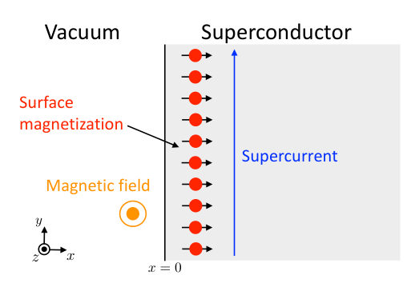
<figcaption class="paper-figure-caption"><b>Fig 1.</b> FIG. 1. Schematic illustration of a semi-infinite Rashba su- perconductor subjected to a uniform magnetic field (orange arrow). Owing to the Rashba spin-orbit coupling, a spin mag- netization polarized along the x direction (red circles with ar- rows) is induced near the surface at x = 0, where the Meissner current flows (blue arrow).</figcaption>
</figure>
<figure class="paper-figure-card">
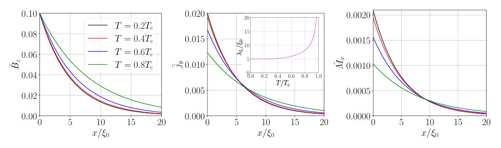
<figcaption class="paper-figure-caption"><b>Fig 2.</b> FIG. 2. Spatial dependence of the magnetic field (left), current density (center), and magnetization (right) near the surface at x = 0 in units of ℏ/2|e|ξ2 0, ℏ/2µ0|e|ξ3 0, and µBN(0)∆0, respectively, for α = 1.5∆0 at T = 0.2Tc, 0.4Tc, 0.6Tc, and 0.8Tc. The inset in the center panel shows the temperature dependence of the London penetration depth.</figcaption>
</figure>
<figure class="paper-figure-card">
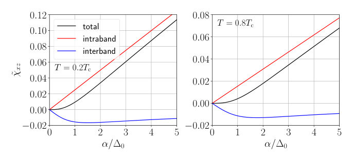
<figcaption class="paper-figure-caption"><b>Fig 3.</b> FIG. 3. Intraband (red) and interband (blue) contributions to the normalized magnetic susceptibility ˜χxz, which originates from the Edelstein effect, together with their sum (black), as functions of α/∆0 at T = 0.2Tc (left) and 0.8Tc (right). The magnetic susceptibility is normalized by 2|e|ξ2 0µBN(0)∆0/ℏ.</figcaption>
</figure>
<figure class="paper-figure-card">

<figcaption class="paper-figure-caption"><b>Fig 4.</b> FIG. 4. Superfluid-momentum dependence of the superconducting gap (left), current density (center), and magnetization (right), in units of ∆0, ℏ/2µ0|e|ξ3 0, and µBN(0)∆0, respectively, for α = 1.5∆0 at T = 0.2Tc, 0.4Tc, 0.6Tc, and 0.8Tc. Here, the unit of superfluid momentum is pc ≡∆0/vF, and the superfluid momentum psy is treated as a local control parameter. In a semi-infinite geometry, however, it should be understood as psy = psy(x; B0), determined by the nonlinear Meissner screening profile, whose effective penetration depth depends on the surface magnetic field B0 [18, 19].</figcaption>
</figure>
<figure class="paper-figure-card">
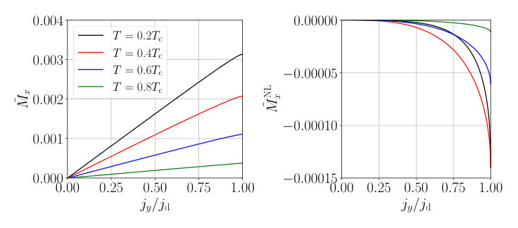
<figcaption class="paper-figure-caption"><b>Fig 5.</b> FIG. 5. Current-density dependence of the magnetization normalized by µBN(0)∆0 (left) and its nonlinear part (right) for α = 1.5∆0 at T = 0.2Tc, 0.4Tc, 0.6Tc, and 0.8Tc. The nonlinear part is defined as ˜ M NL x ≡˜ Mx −˜ M L x , where ˜ M L x denotes the part of ˜ Mx linear in the current density jy. The unit of jy is the depairing current density jd.</figcaption>
</figure>
</div>

<p><strong>Summary.</strong> This work develops a comprehensive quasiclassical theory for the Edelstein effect in Rashba superconductors, distinguishing between intraband and interband contributions. It demonstrates that while the linear response is dominated by intraband effects, the nonlinear magnetization response is uniquely sourced by the interband contribution, which is mathematically linked to the Berry connection arising from spin-orbit coupling. This suggests that nonlinear measurements can serve as a sensitive probe of quantum geometric effects in superconducting materials.</p>
<p><strong>Why it may be interesting.</strong> The explicit derivation linking the nonlinear response to quantum geometric terms (Berry connection) provides a novel theoretical tool for probing superconducting order parameters beyond simple linear response.</p>
<details>
<summary>Detailed structure</summary>
<p><strong>Main problem.</strong> The paper develops a quasiclassical theory to describe the Edelstein effect in superconductors, specifically focusing on incorporating both intraband and interband contributions to understand the nonlinear dependence of magnetization on supercurrent.</p>
<p><strong>Main result.</strong> The nonlinear dependence of magnetization on supercurrent in clean s-wave Rashba superconductors arises solely from the interband contribution, which is linked to the anomalous-velocity term derived from the Berry connection associated with the Rashba spin-orbit potential.</p>
<p><strong>Method.</strong> The authors employ augmented Eilenberger equations, derived from the Gor’kov equations via the Wigner transform, to separate and calculate the contributions from intraband and interband terms.</p>
<p><strong>Model / system.</strong> The study analyzes s-wave superconductors featuring Rashba spin-orbit coupling. The theoretical framework utilizes quasiclassical Green's functions and expands in the small parameter $\delta = \hbar/p_F\xi_0$.</p>
<p><strong>Key observables.</strong> Supercurrent-induced surface spin magnetization ($\mathbf{M}$), charge density ($
ho$), and current density ($\mathbf{j}$).</p>
<p><strong>Important parameters / regimes.</strong> Rashba spin-orbit coupling strength ($\alpha$), superconducting gap ($\Delta$), temperature ($T/T_c$), and supercurrent density ($\mathbf{j}$).</p>
<p><strong>Assumptions / limitations.</strong> The analysis is performed in the clean s-wave Rashba model, and approximations are made in the quasiclassical expansion and in the London limit.</p>
<p><strong>Figures summary.</strong> Figures illustrate the dependence of the superconducting gap, current density, and magnetization on supercurrent and temperature, highlighting the distinct nonlinear contribution from the interband term.</p>
<p><strong>Paper structure.</strong> The paper builds the theory by deriving augmented Eilenberger equations, separating the calculation into intraband (using multi-band equations) and interband (using augmented equations involving the Berry connection) contributions, and finally analyzing the resulting nonlinear current-magnetization relationship.</p>
</details>
<details>
<summary>Abstract</summary>
<p>We formulate a quasiclassical theory of the Edelstein effect in superconductors that incorporates both intraband and interband contributions. To describe the interband contribution, which is absent from the conventional leading-order quasiclassical formulation, we derive augmented Eilenberger equations in the presence of antisymmetric spin-orbit coupling. The intraband contribution is evaluated using multiband Eilenberger equations. We apply these formulations to supercurrent-induced surface spin magnetization in $s$-wave Rashba superconductors and investigate its dependence on temperature, distance from the surface, spin-orbit coupling strength, and supercurrent. The intraband contribution originates from a supercurrent-induced asymmetry of quasiparticles with opposite momenta and spin polarizations, whereas the interband contribution arises from the anomalous-velocity term generated by the momentum derivative of the Rashba spin-orbit potential. In the helicity basis, this anomalous-velocity term is expressed in terms of the Berry connection associated with the momentum dependence of the Rashba eigenstates. The intraband contribution increases linearly with the spin-orbit coupling strength, whereas the interband contribution exhibits a nonmonotonic dependence and is maximized when the Rashba spin splitting is comparable to the superconducting gap. Moreover, within the clean $s$-wave Rashba model considered here, we find that the nonlinear dependence of magnetization on the supercurrent arises solely from the interband contribution. Thus, although the intraband contribution dominates the linear Edelstein effect, the nonlinear Edelstein effect can serve as a useful probe of the interband contribution originating from quantum geometry.</p>
</details>
<p><sub><a href="#top">↑ back to top</a></sub></p>

<p><a id="paper-2609.09532"></a></p>
<h3 id="comprehensive-molecular-dynamics-study-of-the-dynamical-properties-of-a-dense-binary-hard-sphere-mixture"><a href="http://arxiv.org/abs/2609.09532v1">Comprehensive molecular dynamics study of the dynamical properties of a dense binary hard-sphere mixture</a></h3>
<p><strong>Authors:</strong> Sabry G. Moustafa, Andrew J. Schultz<br>
<strong>Type:</strong> theory · <strong>Category:</strong> statistical mechanics · <strong>PDF:</strong> <a href="https://arxiv.org/pdf/2609.09532v1">https://arxiv.org/pdf/2609.09532v1</a><br>
<strong>Analysis basis:</strong> full PDF text, analyzed in chunks
<strong>Topic relevance:</strong> <code>non-equilibrium universality</code> <strong>2/5</strong> · <code>analog quantum simulation</code> <strong>1/5</strong> · <code>scars &amp; prethermalization</code> <strong>1/5</strong></p>
<div class="figure-strip-hint">↔ Scroll figures horizontally</div>
<div class="paper-figures-scroll">
<figure class="paper-figure-card">
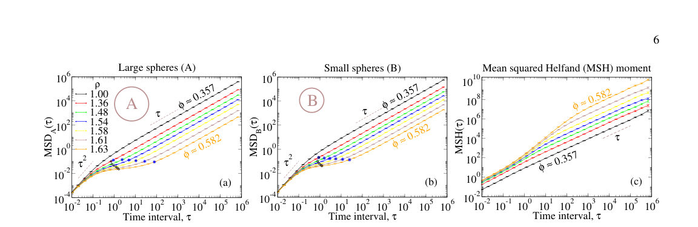
<figcaption class="paper-figure-caption"><b>Fig 1.</b> FIG. 1. Time dependence of the mean square displacement (MSD) for the large (a) and small (b) particles, and mean square Helfand (MSH) moment (c) at seven densities, for a system size of N = 3200. The ballistic, ∼τ2, and diffusive, ∼τ, regimes are indicated by dashed lines. Error bars correspond to 68% confidence limits. Lines connect the data points. In panels (a) and (b), black open circles denote the inflection points (see text) and blue stars correspond to the peak of the α2(τ) function. (see Fig. 7).</figcaption>
</figure>
<figure class="paper-figure-card">
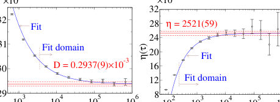
<figcaption class="paper-figure-caption"><b>Fig 2.</b> FIG. 2. Time dependence of the total self-diffusivity (left) and shear viscosity (right) at density ρ = 1.63 (φ ≈0.582) for a system size of N = 3200. The blue curves represent fits using Eq. 3, both yielding reduced χ2 value less than unity. The red solid lines indicate the esti- mated infinite-time limits transport coefficients, with the dashed lines representing the uncertainty bounds obtained from the fits. Numbers in parentheses indicate the uncertainty in the last digit.</figcaption>
</figure>
<figure class="paper-figure-card">

<figcaption class="paper-figure-caption"><b>Fig 3.</b> Figure 3(a) shows the system-size dependence of the self- diffusivity, normalized by its thermodynamic-limit value (see Eq. 14). The data are plotted as a function of N1/3, equiva- lently the box length L, which is the natural scaling variable based on hydrodynamic arguments.37 We find that the data are well-described by a power-law form:62</figcaption>
</figure>
<figure class="paper-figure-card">
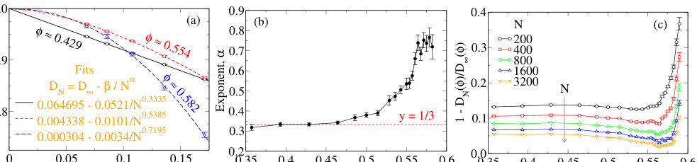
<figcaption class="paper-figure-caption"><b>Fig 4.</b> FIG. 3. (a) Finite-size effects on the total self-diffusivity for system sizes N = 200,400,800,1600,3200 at densities ρ = 1.20,1.55,1.63. Data are normalized by the thermodynamic-limit, D∞, for each density. Solid lines are WLS fits to Eq 14, with reduced χ2 values of 1.76,0.40,0.36 for the three densities, respectively. Density dependence of the fitted exponent α (b) and the normalized self-diffusivity DN/D∞at different system sizes (c), respectively. Lines connect the data points.</figcaption>
</figure>
<figure class="paper-figure-card">
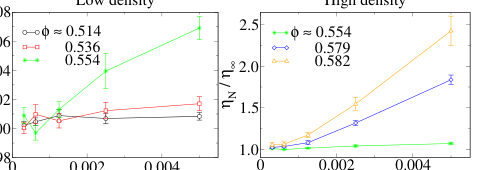
<figcaption class="paper-figure-caption"><b>Fig 5.</b> FIG. 4. Finite-size effects of the shear viscosity for sys- tem sizes N = 200,400,800,1600,3200, at relatively low (left; ρ = 1.44,1.50,1.55) and high (right; ρ = 1.55,1.62,1.63) densi- ties. Data for each density are normalized by the corresponding thermodynamic-limit η∞obtained from the fits (see text). Lines con- nect the data points.</figcaption>
</figure>
</div>

<p><strong>Summary.</strong> This paper presents an extensive molecular dynamics study of a dense binary hard-sphere fluid to characterize its dynamical properties near jamming. Key findings include the breakdown of the Stokes–Einstein relation and evidence of dynamic heterogeneity characterized by specific spatial decay laws. The work provides rigorous benchmark data for testing theoretical models of glassy dynamics in disordered systems.</p>
<p><strong>Why it may be interesting.</strong> While focused on classical hard spheres, the rigorous analysis of dynamic heterogeneity ($\chi_4(	au)$) and the breakdown of simple scaling relations provides a crucial benchmark for theoretical models of glassy dynamics applicable to quantum many-body systems.</p>
<details>
<summary>Detailed structure</summary>
<p><strong>Main problem.</strong> To comprehensively study the dynamical properties and dynamic heterogeneity of a dense binary hard-sphere mixture, particularly near the glass transition.</p>
<p><strong>Main result.</strong> The study finds that transport coefficients exhibit super-Arrhenius dependence and that the Stokes–Einstein relation breaks down, while dynamic heterogeneity is signaled by specific scaling laws in the van Hove function.</p>
<p><strong>Method.</strong> Molecular Dynamics (MD) simulations are used to compute transport coefficients and correlation functions, followed by extrapolation to the thermodynamic limit.</p>
<p><strong>Model / system.</strong> The system modeled is a three-dimensional binary hard-sphere (BHS) fluid mixture, studied over a range of packing fractions ($\phi \approx 0.357-0.582$).</p>
<p><strong>Key observables.</strong> Self-diffusivity ($D$), shear viscosity ($\eta$), van Hove self-correlation function ($G_s(r,	au)$), four-point dynamic susceptibility ($\chi_4(	au)$), and structural relaxation time ($    au_a$).</p>
<p><strong>Important parameters / regimes.</strong> Packing fraction ($\phi$), system size ($N$), and time ($    au$).</p>
<p><strong>Assumptions / limitations.</strong> The analysis addresses finite-size effects (FSE) and critiques the reliability of simple exponential fits for estimating the critical packing fraction ($\phi_0$).</p>
<p><strong>Figures summary.</strong> Figures summarize the system-size dependence of $D(	au)$ and $\eta(	au)$, the non-Gaussian parameter $\alpha_2(	au)$, and the relaxation behavior of $F_s(	au)$ and $\chi_4(	au)$ as system size increases.</p>
<p><strong>Paper structure.</strong> The paper systematically analyzes transport coefficients, investigates finite-size effects across multiple dynamic and thermodynamic properties, and concludes by establishing benchmark data for glassy dynamics.</p>
</details>
<details>
<summary>Abstract</summary>
<p>We present an extensive molecular dynamics (MD) study of the dynamical properties of a binary hard-sphere fluid over a wide range of packing fractions, $φ\approx 0.357-0.582$. The self-diffusivity, $D$, and shear viscosity, $η$, are computed using an efficient implementation of the Einstein--Helfand method. The finite-size effects in $D$ scale as $1/N^α$, with $α$ increasing from approximately $1/3$ to $3/4$ with increasing $φ$, whereas those in $η$ are negligible except for $φ\gtrsim 0.554$, where they scale as $1/N$. The data are then extrapolated to the thermodynamic limit to obtain $D_{\infty}$ and $η_{\infty}$. Both coefficients show a super-Arrhenius dependence on $φ$ for dense states, accompanied by a breakdown of the Stokes--Einstein relation. Although both $D_{\infty}(φ)$ and $η_{\infty}(φ)$ data are well described by an exponential form, we demonstrate that these fits do not provide reliable estimates of the critical packing fraction, $φ_0$, owing to the substantial extrapolation required beyond the accessible equilibrium range. We find the commonly assumed proportionality between $η$ and the structural relaxation time, $τ_α$ , to not hold for this system. For $φ\gtrsim 0.570$, the van Hove self-correlation function $G_s(r, τ)$ exhibits a spatial exponential decay at intermediate times, $τ$, signaling dynamic heterogeneity. The characteristic decay length scales as $λ\sim τ^ν$, with $ν\approx 1/3$, in contrast to the conventional square-root scaling. We also investigate temporal heterogeneity through the four-point dynamic susceptibility, $χ_4(τ)$, and its peak time, $τ_4$. These findings provide rigorous benchmark MD data for computational studies of glassy dynamics and establish a reference for testing theoretical models in dense disordered systems.</p>
</details>
<p><sub><a href="#top">↑ back to top</a></sub></p>
<hr>
<p>
<a href="index.html">← Index</a>
 · <a href="papers_06.html">← Previous</a> · <a href="papers_08.html">Next →</a>
</p>
<hr>

</body>
</html>
